AI's Blind Spots: Comparative Advantage
and Wage Growth under Jagged AGI
Ahmad Lashkaripour (Indiana University, CESifo, CEPR)
Working paper · September 2026
Read PDF · Markdown source · Reader view · Slides · Online appendix
Abstract. Will human labor keep its value once AGI can outperform us at every task? We answer this question through the lens of comparative advantage. We develop and estimate a Ricardian assignment model in which agentic AI may have an absolute advantage over humans at every task, but its capability frontier is jagged: the size of AI's advantage over humans varies across tasks. As AI capabilities grow, it takes over more tasks and workers retreat to AI's comparative blind spots. Yet real wages rise as the labor share of income falls, with an elasticity that reflects the jaggedness of the AI frontier. Every worker can gain without changing sectors if adoption is sufficiently even across sectors. We estimate the jaggedness of the frontier from micro data comparing human and AI costs on similar tasks, and calibrate the model to observed adoption rates and the full input-output and employment structure of the US economy. The estimated model closely replicates the observed but untargeted wage effects of AI growth over 2022–25. If AI capabilities continue to grow at the same pace, our Ricardian model predicts that average real wages will rise 3.5% per year over the next five years, even as labor is displaced from 30% of tasks. Inequality between capital and labor rises, but all wages grow. Workers at all education levels gain despite limited mobility, with the least-educated gaining the most. If the AI frontier were five times less jagged, the same decline in AI costs would leave real wages virtually unchanged despite staggering GDP growth. Our framework suggests that AI may prove less harmful to labor wages than past labor-saving technologies such as trade or the steam engine, because its capability frontier is more jagged and its adoption more even across the economy.
1 Introduction
As agentic AI models grow more powerful, many workers fear AI is coming for their jobs. They worry that AI-driven growth will immiserate them. The fear is not difficult to understand: as agentic AI becomes more productive, it will perform more and more tasks at lower cost than human labor, until almost no work remains for humans. The fear harks back to past episodes of rapid technological progress. A vivid example is the fate of horses at the dawn of the twentieth century: engines displaced horses, rendering them economically irrelevant and unraveling a rapid decline in the horse population. Many worry that what engines did to horses, agentic AI will do to humans.
While the pessimism towards AI is understandable, some economists have presented an optimistic counter-narrative in which labor is shielded, and even benefits from, explosive AI growth. These arguments generally share the same fingerprint: they reserve some sanctuary tasks for labor that are inherently infeasible for machines. These tasks often require a human touch, and more of them may emerge with further AI progress. In this view, human-only tasks become the bottleneck under explosive AI-driven growth and command extraordinary compensation.
This paper offers an alternative view that is equally optimistic but rooted in the jaggedness of the AI capability frontier. Drawing on Ricardo’s theory of comparative advantage, the argument runs as follows. Suppose generative AI is more productive than humans at every task, but its capabilities are jagged. Then AI will not necessarily perform every task. As long as AI capacity is finite, it is optimal to allocate it to the tasks where its relative advantage is greatest. Humans select into remaining tasks, freeing AI capacity for more productive uses. Many commentators have made this argument informally, but it remains unclear how favorable it is for labor. Even if workers remain relevant, do real wages fall, or does jaggedness prevent immiseration? Answering these deeper macroeconomic questions requires a formal model.
We develop a dynamic Ricardian assignment model where each good is produced using a continuum of tasks that can be assigned to either labor or AI. There is nothing that distinguishes AI output from that of labor for a given task. However, AI capabilities are jagged, meaning that even though they could perform better than humans at every task, they have blind spots in which the relative difference is smaller. The optimal assignment is then determined purely by comparative advantage, whereby humans retreat into blind spots and retain economic value even as capabilities explode. The framework differs from existing pro-labor theories of AI in one key aspect: it does not reserve any tasks for humans, nor does it require that human labor maintain an absolute advantage over AI in some niche tasks.This differs from Korinek and Suh (2024), Artuç, Bastos and Rijkers (2023), and Jones and Tonetti (2026) who reserve some tasks for humans, and Acemoglu and Restrepo (2018), who assume that technological change creates new tasks in which labor has an absolute advantage. In these models, labor is shielded by sanctuary tasks reserved for humans at a given date. In our assignment model, however, AI can dominate humans in every task. Yet real wages are shielded by the selection of humans into niche tasks through the forces of comparative advantage.
The model is used to examine the labor market impacts of explosive but jagged AI growth. We differentiate between two modes of jaggedness: (1) a jagged frontier, reflecting dissimilarity between labor and AI productivity profiles across tasks (Dell’Acqua et al., 2026), and (2) jagged adoption across sectors (Rinehart, 2026). A bold theoretical prediction is that jagged AI-driven growth will enrich workers without bound, even as agentic AI displaces humans in one task after another. More remarkably, the gains can materialize even if workers have limited mobility across sectors. All that is needed is that AI capabilities are sufficiently jagged but adoption is not too jagged across sectors. Data on early AI growth and adoption suggest that both conditions hold. If AI capabilities grow at the same pace but remain jagged, humans will be displaced from 30% of the tasks across all sectors of the economy, but their real wages will rise by about \(18.5\) percent in the process. And because AI adoption does not appear extremely jagged, the gains will materialize even if workers are frozen in their respective sectors and are unable to move.
A notable feature of the model, owing to recent advances in trade theory, is a simple formula characterizing the AI-driven growth’s impact on the aggregate real wage (\(w\)). The formula chctaerize wage growth in terms of two sufficient statistics: the jaggedness of the AI frontier (\(1/\psi\)) and displacement, measured as the decline in labor’s share of GDP (\(\pi _{L}\)). Namely,
Sectoral and occupational wages can be characterized similarly, in terms of frontier jaggedness, adoption jaggedness, sectoral labor shares, and Domar weights. The fact that more displacement, reflected in a lower labor share, coincides with higher wages is a manifestation of Ricardian selection. As the labor share falls, labor productivity on retained tasks grows, raising dollar earnings, and aggregate productivity rises, increasing the each dollar’s purchasing power. In other words, the falling labor share is a sufficient statistic reflecting economy-wide productivity gains from AI growth and labor’s productivity growth through Ricardian specialization. Together, these forces offset the mechanical effect of displacement on real wages, producing an inverse relationship between aggregate wages and the labor share. The relationship weakens as AI capabilities become less jagged, and tend to zero without jaggedness.
The Ricardian micro foundation also un lets us measure the labor market effects of AI without estimating an aggregate production function. The required elasticity, \(1/\psi\), can be recovered from micro-level data on the cost of humans versus AI on similar tasks. We estimate \(\psi\) using data on \(484\) software engineering tasks drawn from \(12\) open-source repositories in SWE-bench Verified (Jimenez et al., 2024; OpenAI, 2024). AI cost is based on the tokens used by \(32\) AI system configurations, released from \(2024\) through \(2026\) and evaluated by Epoch AI (Epoch AI, 2026 a). Human cost is based on a professional assessment of the time needed to complete the same task, multiplied by the hourly wage of a software developer. By the end of the sample, AI completes \(75.2\) percent of the tasks below human cost, and for the median such task, human cost is \(4\) times AI cost. Our two estimation methods yield \(\psi =1.14\) and \(\psi =1.36\), so each percent decline in labor’s share of GDP raises the real wage by \(0.7\) to \(0.9\) percent. We calibrate the jaggedness of adoption using sectoral measures of AI exposure (Eloundou et al., 2024), which proxy for the share of future AI improvements each sector can absorb. Other sufficient statistics are consumption and input-output shares, the share of tasks performed by AI in each industry, and the allocation of workers across industries. We calibrate them to the BEA input-output accounts (Bureau of Economic Analysis, 2024), a survey of US workers by Epoch AI and Ipsos (Epoch AI, 2026 b), and the American Community Survey (US Census Bureau, 2024), respectively.
We test the model against historical data, using the goodness-of-fit measure proposed by Adão, Costinot and Donaldson (2025). The yardstick is whether the calibrated model can reproduce the effects of AI growth on sectoral wages from 2022 to 2025, which were not targeted in the calibration. Because many other shocks affected wages over this period, the test asks whether the gap between observed and predicted wage changes across sectors is orthogonal to the AI growth shock. The results are encouraging. The model is not rejected, whether workers remain in their original sectors or move across sectors. The IV coefficient is \(0.8\) in the first case and \(1.15\) in the second, and both 95 percent confidence sets contain one.
Next, we use the model to simulate the forward-looking impacts of AI growth. We extrapolate the observed decline in the cost of completing software engineering tasks with AI, \(79.1\) percent a year, and assume that the annual rate of decline slows to about \(45.8\) percent after five years. We present four results. First, after five years, average real wages rise by \(18.5\) percent, while labor’s share of GDP falls from \(54.1\) to \(39.9\) percent. With an AI frontier five times less jagged, real output rises by \(102.8\) percent, but average real wages rise by only \(0.64\) percent. Jaggedness is what turns AI-driven displacement into wage growth. Second, at about the same output growth, jagged adoption pays workers more than balanced adoption, in which AI improves at the same rate in every sector. After five years, the difference in annual wage growth increases every year: by year \(50\), real wages grow by \(8.9\) percent a year under jagged adoption and \(5.7\) percent under balanced adoption. Third, every education group gains, even when workers cannot move across sectors, with five-year gains that range from \(12.5\) percent for workers with a bachelor’s degree or more to \(31.2\) percent for those with high school or less. The reason is that AI-driven displacement leaves niche tasks to workers within each sector rather than emptying it. Lastly, the Jevons paradox, in which the knowledge workers that AI displaces gain the most, emerges only if the elasticity of substitution across sectors exceeds about \(2.5\).
This paper relates to a growing literature on the aggregate impacts of labor-substituting technologies (Zeira (1998), Acemoglu and Autor (2011), Acemoglu and Restrepo (2018), Acemoglu and Restrepo (2022); Hémous and Olsen (2022); Moll, Rachel and Restrepo (2022); Mookherjee and Ray (2022); Kogan et al. (2023); Autor and Thompson (2025)). In these models automation often has a displacement effect, which reduces labor demand as tasks are assigned to machines, and a productivity effect, which raises demand for the tasks labor retains. Recent work extends these frameworks to explore the effects of AI on labor markets. Aghion, Jones and Jones (2019), Nordhaus (2021), Trammell and Korinek (2023), Korinek and Suh (2024), Jones and Tonetti (2026), and Acemoglu (2025), examine whether wages survive rapid AI-driven growth. The general insight is that wages are shielded if some tasks remain beyond AI’s reach or new human-only tasks arrive with further growth. Notably, Korinek and Suh (2024) show that a bound on task complexity produces wage collapse.
A related literature explores the impacts of foreign trade as a labor-substituting technology: Autor, Dorn and Hanson (2013), Caliendo, Dvorkin and Parro (2019), Traiberman (2019), Dix-Carneiro and Kovak (2017), and Galle, Rodríguez-Clare and Yi (2023) examine how competition from trade displaces workers and how the distribution of gains differs across sectors, occupations, and groups of workers. Artuç, Bastos and Rijkers (2023) nests automation within a Ricardian model of trade. Real wages in their framework are further shielded from automation through a range sanctuary tasks that are out reach for machines.
We contribute to this discourse by applying tools from trade theory (Eaton and Kortum (2002); Arkolakis, Costinot and Rodríguez-Clare (2012); Galle, Rodríguez-Clare and Yi (2023); Costinot and Vogel (2015); Caliendo and Parro (2015)) to examine the labor market impacts of AI displacement. Several new results emerge from this marriage. First, real wages grow without bound under explosive but jagged AI growth, even if no tasks are reserved for humans and agentic AI dominates humans at every task.The result holds exactly when comparative advantage is unbounded; with a bound on the relative cost advantage the real wage plateaus after an early rise, whereas Korinek and Suh (2024) obtain wage collapse; and a worker who cannot leave a sector where AI capability grows much faster than elsewhere can see real earning power fall. The aggregate real wage effects of AI displacement are determined by two sufficient statistics: (1) jaggedness of AI frontier, and (2) change in the labor share of income. This result opens the door for measurement using observed labor versus AI cost data, without estimating substitutability within and across tasks. Lastly, if the AI frontier is jagged all workers can gain from AI-driven growth even if they are stuck in more AI-exposed sectors or occupations.
Finally, our work relates to a growing literature that quantifies the labor market effects of AI. Freund and Mann (2026) and Althoff and Reichardt (2026) build task-based models in which workers differ in task-specific skills. Freund and Mann (2026) estimate the distribution of task-specific skills and show that automating a task reshapes the jobs that bundle it: workers who chose an occupation for the automated task leave and lose, those skilled in the remaining tasks gain, and occupational exposure is a poor guide to individual wages. Althoff and Reichardt (2026) add occupational choice and skill accumulation and identify a third channel besides automation and augmentation, simplification, which lowers the skills a task requires and drives the fall in wage inequality in their AI counterfactual. Hampole et al. (2025) argue that occupations whose AI exposure is concentrated in a few tasks lose less labor demand because workers shift toward the remaining tasks. Lindenlaub et al. (2026) infer comparative advantage and the cost of using AI from adoption data, and Lashkari et al. (2026) measure AI training and inference costs. Our framework condenses all information about the jaggedness of the AI frontier into a single estimable parameter, which we identify from task costs. Exposure ratings (Eloundou et al., 2024) Then discipline the jaggedness of adoption across sectors. Our analysis yields two fresh results. First, a jagged frontier produces large aggregate wage gains. Second, because adoption is not too jagged, these gains extend to workers at every education level.
2 A Ricardian Assignment Model with Jagged Frontier
We consider a neoclassical economy populated with a fixed number of workers, \(L>0\), and endowed with a time-varying stock of AI capacity, \(M_{t}>0\). Production in each date employs labor and AI capacity. Final production involves a continuum of tasks indexed by \(i\in [0,1]\), each of which can be assigned to labor or AI. Each task can be performed by either factor, and because labor and AI output are perfect substitutes within a task, assignment is governed entirely by comparative cost advantage. The two factors differ along two dimensions: their productivity profiles across tasks, and their unit prices. Labor commands a wage rate \(w_{t}\) and AI stock owners earn a rental rate \(r_{t}\).
Aggregate output and price index. The final output is produced by combining tasks. Let \(y_{t}(i)\) denote output of task \(i\), and let \(\sigma >0\) denote the constant elasticity of substitution between tasks. Final output is a CES aggregation over the outputs of all tasks in \([0,1]\):
The unit price of the final output is \(P_{t}=\left [\int ^{1}_{0}p_{t}(i)^{1-\sigma }\,\mathrm {d}i\right ]^{\frac {1}{1-\sigma }}\), where \(p_{t}(i)\) is the price of task \(i\). We assign \(Y_{t}\) as the numeraire at every date, so \(P_{t}\equiv 1\). Wages, rental rates, and all other prices are in real terms, expressed in units of contemporaneous final output.
Ricardian production per task. Production is linear within each task. One unit of labor produces \(z_{L}(i)>0\) units of task \(i\), and one unit of AI produces \(z_{M,t}(i)>0\) units of the same task. Let \(\ell _{t}(i)\) denote labor used on the task and let \(m_{t}(i)\) denote the AI inputs used for it. Then total output is
Under perfect competition, the task is produced by the factor with the lower unit cost, yielding a competitive price
Thus, task \(i\) is assigned to workers if \(w_{t}/z_{L}(i)\leq r_{t}/z_{M,t}(i)\) and is assigned to AI otherwise.
Comparative advantage. For each task, there are alternative ideas for how to perform it. Each idea is specific to either labor or AI, and its productivity is the output produced by one unit of the corresponding input. We model the stock of worker ideas and the discovery of AI-improving ideas using Poisson processes. Worker ideas are drawn once and remain fixed, whereas AI-improving ideas arrive over time, offering a new way to perform the task. The two processes share a task-specific rate of arrival. Highly productive ideas are rare in both processes. Worker productivity \(z_{L}(i)\) is the productivity of the best worker idea for task \(i\). AI productivity \(z_{M,t}(i)\) is the productivity of the best AI idea discovered by date \(t\). A new AI idea raises productivity only if it is better than the best available alternative.We follow Kortum (1997) and Eaton and Kortum (2001), and let productivity be determined by the best available idea. We build on the more general model proposed by Lind and Ramondo (2023) to allow a correlation between worker and AI productivity within a task. In Lind and Ramondo (2023), ideas spread across locations. Here, worker ideas remain fixed, AI ideas arrive directly for each task, and ideas do not spread between the two.
The Poisson process over ideas, together with the assumption that productivity is determined by the best available idea, implies a nested-Fréchet distribution for worker and AI productivity. For any \(x\) and \(y\in \mathbb{R}_{+}\), Appendix A derives the joint distribution:
Here, \(T_{L}>0\) denotes the stock of worker knowledge; \(T_{M,t}>0\) represents the stock of AI knowledge available at date \(t\). The worker knowledge stock is fixed, whereas research spending determines how quickly the stock of AI knowledge grows. A larger \(T_{L}\) gives a representative measure of labor’s absolute advantage across the continuum of task, and a larger \(T_{M,t}\) serves the same function for AI. The common tail parameter \(\theta >0\) regulates dispersion: a smaller \(\theta\) implies greater productivity dispersion across tasks. The parameter \(\rho \in [0,1)\) governs the correlation between worker and AI productivity across tasks, with \(\rho =0\) corresponding to independence. Altogether, \(\psi \equiv \theta /(1-\rho )\) is the Fréchet dispersion parameter, whose inverse \(1/\psi\) measures the jaggedness of the AI capability frontier relative to humans.A smaller \(\theta\) makes very high productivity more common and increases dispersion in absolute productivity. When \(\rho =0\), worker and AI productivity are independent and \(\psi =\theta\); as \(\rho\) rises, their productivity profiles become more similar task by task. Section 7 estimates \(\psi\) directly from this distribution.
A task is assigned to workers whenever worker productivity relative to AI productivity exceeds the relative wage–rental ratio. At the prevailing factor prices, the joint distribution gives the worker task share:
with \(\pi _{M,t}=1-\pi _{L,t}\) by construction. A smaller \(\psi\) means greater differences in labor-vs-AI productivity profiles and a weaker re-assignment response to relative factor price changes. Because every positive productivity ratio \(z_{L}/z_{M}\) is realized, each factor produces some tasks whenever both factor prices are finite and positive.
The joint distribution determines which tasks workers continue to perform. As AI becomes more productive, it takes over the tasks on which it has the greatest cost advantage. Workers sort into a narrower set niche tasks for which their relative productivity is higher. If workers are left performing only a fraction \(\pi _{L,t}\) of all tasks, these will be the task for which they are most productive: median worker productivity among those niche tasks is higher by a factor of \(\pi ^{-1/\psi }_{L,t}\) than the median across all tasks.
Jaggedness of the AI Frontier (\(1/\psi\)). Many experts describe the AI capability frontier as being jagged (Dell’Acqua et al., 2026). The notion of jaggedness reflects systematic differences in how well AI capabilities across tasks vary with perception of difficulty based on human capabilities. If AI capabilities are jagged, two tasks that appear similar in difficulty for humans may fall on the opposite sides of the difficulty spectrum for agentic AI tools. Our Ricardian framework is well-suited to analyze this particular aspect of AI-driven growth. Figure 1 illustrates the connection. Fix the collective frontier of Human capabilities, \(T_{L}\), and define jaggedness as AI’s relative strength in relation to the frontier traced by \(T_{L}\). From the lens of our model, if \(\psi\) is high, there is a strong correlation between Human and AI capabilities. So, the knowledge frontier will become uniformly dominated by AI as capabilities grow. This leaves fewer pockets of comparative advantage for human workers to retreat to. However, a lower \(\psi\) implies less correlation between human and AI capabilities. Consequently, humans may retain more pockets of comparative advantage tasks, even as AI capabilities grow exponentially.
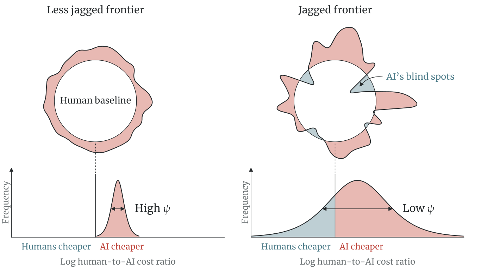
Notes: The circle is the human baseline, where a task costs the same whether humans or AI produce it. Each spike of the frontier is one task. Its distance from the center rises with the task’s human-to-AI cost ratio, so it reaches beyond the circle where AI is cheaper and dips inside where humans are cheaper. The curves below plot the distribution of the log human-to-AI cost ratio across tasks, whose spread is proportional to \(1/\psi\). Teal marks AI’s blind spots, the tasks where humans are cheaper.
Assignment and equilibrium. Task assignment responds to technology and factor prices. Let \(\pi _{L,t}\) denote the fraction of tasks produced by workers and let \(\pi _{M,t}=1-\pi _{L,t}\) denote the fraction produced by AI. Applying the cutoff rule in (3) to the distribution in (4) yields
The above equation states that a factor performs more tasks when its technology improves or its price falls.
A competitive equilibrium consists of task quantities, factor allocations, task prices, a wage, and an AI rental rate such that final good producers minimize the cost of producing the final output bundle under (1); each task is assigned to the lower-cost factor per (3); and the aggregate resource constraints (2) are satisfied. As shown in Appendix A, the conditional distribution of task prices is the same among tasks produced by workers and by AI. Productivity differences adjust the extensive margin of assignment, but conditional on assignment the price of the Human bundle matches that of the AI. Thus, the average spending per task is the same in both sets, and task shares coincide with expenditure shares. Market clearing therefore becomes
indicating that each factor receives a fraction of the aggregate revenue proportional to the share of tasks it performs. Combining the assignment share formula with factor market clearing pins down the relative factor price as
Henceforth, let \(\widetilde {M}_{t}\equiv [T_{M,t}M^{\psi }_{t}]^{1/(1+\psi )}\) denote the effective AI stock meaning that the supply of AI raises if either the supply of compute \(M_{t}\) increases or the AI frontier AI techniques \(T_{M,t}\) improve through knowledge accumulation. Substituting the relative factor price back into (6) gives the task shares directly in terms of technologies and factor supplies:
It remains to aggregate tasks given the optimal assignment into aggregate output and price indexes. The derivation is presented in Appendix A yielding the following representation for aggregate output as a of productivity fundamentals,
where \(\gamma >0\) is the a constant composed the parameters related to the output aggregator and productivity distribution.Throughout, we assume that the primitives are positive and finite, and \(\sigma <1+\theta\), so that the price index is finite. Finally, invoking the labor market clearing condition in (7) yields the following expression for the real wage:
The real wage measure worker welfare, as the amount of final good they can purchase with their earnings. Here \(\gamma\) and \(T_{L}\) are constant primitives. So the only time varying factor that affects the real wage is \(\pi _{L,t}\). And perhaps surpassingly, the real wage becomes higher the smaller the share of tasks assigned to labor.
3 Displacement Is Not Immiseration
The sufficient statistics formula (11) uncovers a surprising relationship between displacement and real wages. It is best understood by thinking of humans as collectively trading tasks with a country of AI agents. As labor’s task share \(\pi _{L,t}\) shrinks, the gains from trade for labor improve: workers retreat toward a narrower set of niche tasks, and as a result of specialization, their marginal productivity grows. Each niche task they produce can be exchanged for an ever-cheaper, ever-wider range of AI-performed tasks. Somewhat paradoxically, as the labor share approaches zero, the real wage explodes.
Theorem 1.a (Displacement is not immiseration). If AI capabilities are jagged, AI-driven growth raises the real wage in inverse proportion to labor’s share of economic tasks, with elasticity \(1/\psi\), representing the degree of frontier jaggedness:
The theorem is proved in Appendix B.1, though the machinery is pretty simple. As a stock of AI \(\widetilde {M}_{t}\) grows, it consumes the share of tasks assigned to labor, given by
And as \(\widetilde {M}_{t}\) grows infinitely large, \(\pi _{L,t}\) goes to zero. And the real wage paid to workers grows with the decline of \(\pi _{L,t}\) at an elasticity \(1/\psi\).The limits in (12) also hold when AI growth is recursive and reaches a singularity in finite time. If fixed shares of output finance AI installation and research, AI capabilities diverge at a finite date; as that date approaches, labor’s task share vanishes and the real wage rises without bound, at a rate that does not depend on jaggedness. Appendix B.4 states the result and Appendix B.5 proves it. The joint productivity law then makes every percentile of productivity among the tasks retained by workers a fixed multiple of the real wage. In other words, worker productivity also explodes. An distinct feature of the Ricardian assignment model, is that the niche tasks left to the workers are not expensive bottlenecks. To formalize this, let \(s_{L,t}\equiv w_{t}L/Y_{t}\) denote labor’s share of GDP. Factor-market clearing then implies the following.
Corollary 1 (Task and income shares). At every date, labor’s share of GDP equals its share of tasks:
This corollary contrasts with the essential task framework of Jones and Tonetti (2026), where a small set of tasks can command a disproportionately large cost share. Rather than being driven by such weak links, the explosion in real wages stems from the unbounded growth in labor productivity as workers select into niche tasks where AI’s relative cost advantage is less pronounced, precisely the tasks in which human labor retains a much higher relative cost advantage.
3.1 Displacement Improves Labor Productivity
To connect to our result to task-based models of automation like (Acemoglu and Restrepo, 2018), it is useful to unbundle the real wage effects of AI-driven growth. Doing so also elucidates why the real wage growth is independent of the CES production parameter, \(\sigma\), which plays a canonical rule in past studies. Let \(\mathcal {H}_{t}\) be the set of tasks workers perform, of measure \(\pi _{L,t}\), and let \(\bar {z}_{L,t}\) denote the average labor productivity on the tasks retained by workers.
Each task in \(\mathcal {H}_{t}\) costs \(w_{t}/z_{L}(i)\) and its demand is proportional to \(Y_{t}p_{t}(i)^{-\sigma }\), so summing revenue over \(\mathcal {H}_{t}\) gives labor’s income, \(w_{t}L=Y_{t}\,w^{1-\sigma }_{t}\,\pi _{L,t}\,\bar {z}^{\,\sigma -1}_{L,t}\). Writing in log differences, obtains the following expression for real wage growth:
With worker knowledge frontier \(T_{L}\) fixed, (10) makes output per worker proportional to \((1/\pi _{L,t})^{(1+\psi )/\psi }\). The realized labor productivity \(\bar {z}_{L,t}\) is, meanwhile, proportional to \((1/\pi _{L,t})^{1/\psi }\) because as workers sort into a narrower range of tasks, their productivity in these task would be greater than the displaced tasks. Altogether, following the derivation in Appendix A.5, we get
Plugging these equations back into Equation (14) yields our sufficient statistics formula under Theorem 1.a:
The elasticity of substitution, \(\sigma\), is absent from this expression because the extensive and intensive margins of displacement exactly offset each other. This feature of the model opens the door for measurement with micro-level data without aggregate production function estimation.
3.2 General Distribution
Theorem 1.a invokes the sharp sufficient statistics formulas implied by the Fréchet distribution. We used Fréchet as the baseline specification because it is built on a solid theoretical micro-foundation and emerges organically from new discoveries arriving according to a Poisson process. The result that displacement is not immiseration, nonetheless, goes through under a general distribution. To demonstrate this, suppose that AI progress is Hicks-neutral across tasks, \(z_{M,t}(i)=A_{t}\tilde {z}_{M}(i)\), and let relative productivity advantage \(a(i)\equiv z_{L}(i)/\tilde {z}_{M}(i)\) follow an arbitrary continuous distribution \(G\) that admits a density. The distribution could be bounded or unbounded and depend on the baseline productivity \(\tilde {z}_{M}\). Ricardian assignment delegates tasks for which \(a(i)>a^{*}_{t}\) to workers, where \(a^{*}_{t}=A_{t}w_{t}/r_{t}\). Thus, a share \(\pi _{L,t}=1-G(a^{*}_{t})\) of tasks are performed by workers in equilibrium. Aggregating tasks under this assignment profile using the CES price index yields:We assume here that \(\sigma >1\) and \(\Phi (a^{*})\) is finite. For \(\sigma =1\),\[\Phi (a^{*})=\exp \{-\mathbb {E}[\ln \tilde {z}_{M}]+\mathbb {E}[\ln \min \{a^{*}/a,1\}]\}\]; all results below still hold, and \(\mathbb {E}[\tilde {z}^{\sigma -1}_{M}]^{1/(\sigma -1)}\) becomes \(\exp \{\mathbb {E}[\ln \tilde {z}_{M}]\}\). See Appendix B.2.
The following theorem then follows immediately from the resulting structure with a formal proof provided in Appendix B.2.
Theorem 1.b. Suppose the relative productivity of labor to AI follows a general and potentially bounded distribution \(G\):
The real wage rises with displacement wherever \(G(a^{*})>0\):
\begin{equation}\frac {\,\mathrm {d}\ln w_{t}}{\,\mathrm {d}\ln (1/\pi _{L,t})}=\frac {s_{M}(a^{*}_{t})}{\eta (a^{*}_{t})}>0,\label {eq:general-elasticity-main}\end{equation}where \(s_{M}(a^{*})\) is AI’s income share and \(\eta (a^{*})\equiv -\,\mathrm {d}\ln [1-G(a^{*})]/\,\mathrm {d}\ln a^{*}\) is the tail elasticity of the joint productivity distributoin \(G\).Let \(\bar {a}<\infty\) denote the upper limit of relative human productivity. Under standard regularity conditions, unbounded growth in AI capabilities leads to full displacement, but raises real wages until it plateaus at a positive but finite rate:
\begin{equation}\pi _{L,t}\to 0,\qquad w_{t}\longrightarrow \bar {a}\cdot \mathbb {E}[\tilde {z}^{\sigma -1}_{M}]^{\frac {1}{\sigma -1}}.\label {eq:general-plateau-main}\end{equation}
The theorem states that the real wage rises monotonically to a finite plateau if \(\bar {a}<\infty\) and diverges if the productivity distribution is unbounded, i.e., \(\bar {a}=\infty\). Moreover, if AI has an absolute advantage in every task in the chosen baseline year, which would be the case under \(\bar {a}=1\), then the real wage converges to AI’s average productivity in that baseline year under explosive AI growth. More generally, Theorem 1.b states that the distribution of comparative advantage governs the pace of wage gains and their eventual limit, but not the direction. The pace in (16) is the ratio of AI’s share of income and the tail elasticity of \(G\) (the rate at which displacement exhausts labor’s remaining advantage). The limit, meanwhile, (17) depends on the upper endpoint of \(G\). If comparative advantage is bounded, the real wage climbs to a finite plateau rather than collapsing, even as AI absorbs every task; if it is unbounded, the real wage grows without bound.A constant tail elasticity is not required for the latter: an unbounded \(G\) whose tail elasticity grows without bound still delivers unbounded growth, though at a lower rate than any power of \(1/\pi _{L,t}\)—see Appendix B.2. In Korinek and Suh (2024), a bound on task complexity lets AI automate every task and the real wage collapses; here, a hard bound on relative advantage makes the real wage plateau instead, because collapse would require price of AI services to become exactly zero.Fréchet productivity is used because it delivers a closed form, not because it delivers an optimistic result. Under it the response of the real wage to displacement in (16) is the constant \(1/\psi\), so the real wage is an exact power function of \(1/\pi _{L,t}\) at every task share, while Theorem 1.b requires no such assumption. Appendix B.2 shows that limiting labor’s comparative advantage to a finite upper bound \(\bar {a}\) multiplies that response by \(1-(a^{*}_{t}/\bar {a})^{\psi }\) at \(\sigma =1\), where \(a^{*}_{t}\) is the cutoff comparative advantage at which tasks shift to AI. That factor is close to one while the cutoff is well below \(\bar {a}\) and falls to zero as the cutoff approaches \(\bar {a}\), so a bound makes wage gains smaller rather than larger.
3.3 Displacement Gives Worker Leverage
The previous section showed that real wages survive displacement and even grow without bound as AI capabilities improve. A natural worry is that the benefits of AI growth diminish as AI takes over more tasks. Here, we show the opposite: that more displacement amplifies the marginal wage gains from AI growth. To illustrate this point, let \(g_{X}\equiv \dot {X}/X\) denote the growth rate of a generic variable \(X\), with \(g_{\widetilde {M},t}\) denoting The growth in AI capabilities, \(\widetilde {M}_{t}\). When AI performs a narrow set of tasks, the growth in \(\widetilde {M}_{t}\) has little bearing on real wages and consumption. But when AI performs many tasks, the reduction passes through more broadly to real wages. In particular, the elasticity of the real wage with respect to the stock of AI capabilities equals the AI-automated share of tasks over \(\psi\):
The corresponding wage and output growth rates are
The proof follows from the Ricardian assessment model written in growth algebra. Ricardian task assignment, per Equation (13), implies \(g_{\pi _{L},t}=-\pi _{M,t}g_{\widetilde {M},t}\), indicating that AI growth erodes labor’s share of tasks in proportion to AI’s current reach. Since the real wage is inversely related to the labor’s task share, \(\partial \ln w_{t}/\partial \ln \pi _{L,t}=-1/\psi\), the two negative effects convert labor displacement from tasks into real wage growth. The aggregate output equation ((10)) multiplies the real wage growth by \(1+\psi\), yielding the growth division presented above.
An immediate implication of the above result is that faster growth in AI capabilities raises real wage and output growth in the same proportion. At a given level of automation \(\pi _{M,t}\), doubling \(g_{\widetilde {M},t}\) doubles both growth rates. As AI capabilities expand further, \(\pi _{M,t}\) rises, so subsequent improvements apply to a larger share GDP and have a larger effect on both wages and output. Their growth rate nevertheless retains the same ratio \(g_{w,t}=\frac {1}{1+\psi }g_{Y,t}.\)Section (7) estimates \(\psi =1.36\), which implies \(1/(1+\psi )\approx 0.42\). Based on these estimates, real wages grow by \(0.42\) percent for every \(1\) percent increase in output. This differs from Korinek and Suh (2024), where automation reduces the number of tasks reserved for workers, while capital accumulation raises the productivity of workers who remain. So, wages continue to grow only if capital accumulation keeps pace with automation and enough tasks remain exclusive to workers to retain labor scarcity.It is important to understand that this result is about the purchasing power of labor, not its income share. The labor share of income falls as AI performs more tasks. However, even though workers are stuck in small pockets of GDP, their wages have high purchasing power because growth in AI capabilities lowers the cost of performing most tasks, making consumer goods cheaper.
3.4 Task Displacement and Unemployment
Theorem 1.a shows that the real wage rises as AI displaces labor from tasks. In the framework, however, workers switch to other tasks and avoid unemployment in he transition. The transition assumes away nominal rigidities. It requires that the nominal wage rate adjusts so that all \(L\) workers remain employed on the remaining human tasks. Here, asks what happens to employment under nominal wage rigidities.
We work within the same Ricardian economy, but no longer assign the final good as the numeraire to emphasize nominal rigidities. A breve denotes a nominal variable. Let \(\breve {P}_{t}\) denote the price index of final output, and let \(\breve {w}_{t}=\breve {P}_{t}w_{t}\) denote the nominal wage rate, \(\breve {r}_{t}=\breve {P}_{t}r_{t}\) represent the nominal rental rate, and \(\breve {Y}_{t}=\breve {P}_{t}Y_{t}\) the nominal GDP. All \(L\) workers are willing to work, but only \(n_{t}L\) of them are employed, where \(n_{t}\in (0,1]\) is the employment rate and \(u_{t}=1-n_{t}\) the unemployment rate. In equilibrium the nominal wage equals the value of the marginal product of labor, and labor’s share of GDP equals its share of tasks as in Corollary 1. The factor market clearing condition (7) becomes
where \(\pi _{L,t}\) is the share of tasks performed by the \(n_{t}L\) employed workers.
With a flexible nominal wage, every worker is employed. Setting \(n_{t}=1\) in (20) gives the full employment wage \(\breve {w}^{F}_{t}=\pi _{L,t}(1)\breve {Y}_{t}/L\), where \(\pi _{L,t}(1)\) denotes labor’s task share at full employment, given by (9). As the effective AI stock grows, \(\pi _{L,t}(1)\) falls. At given nominal GDP, the nominal wage must fall to keep every worker employed, even though the real wage rises by Theorem 1.a.
Following Rodríguez-Clare, Ulate and Vasquez (2025), we suppose that the nominal wage cannot fall below a floor set by last period’s wage, \(\underline {\breve {w}}_{t}=\delta _{w}\breve {w}_{t-1}\) with \(0\leq \delta _{w}\leq 1\), and that employment adjusts instead:
If the full employment wage is below the floor, fewer than \(L\) workers are employed at \(\breve {w}_{t}=\underline {\breve {w}}_{t}\); if it is at or above the floor, every worker is employed. The floor applies to all workers, so the unemployed cannot offer to work for less than the employed, and unemployment is involuntary. Nominal GDP \(\breve {Y}_{t}\) is the nominal anchor: the model determines real output and the price level, and \(\breve {Y}_{t}\) pins down the nominal scale.
Dividing (20) at date \(t\) by the same equation at date \(0\) gives
When nominal GDP and the nominal wage are unchanged, the last fraction equals one, and employment falls in proportion to labor’s task share: a one percent decline in labor’s task share means a one percent decline in employment. Employment falls because labor’s share of a fixed nominal GDP falls while the nominal wage cannot, not because each displaced task is a job.
Proposition 1 (Task displacement and employment). Start from full employment, \(n_{0}=1\), and let the effective AI stock \(\widetilde {M}_{t}\) grow between dates \(0\) and \(1\), with \(T_{L}\) and \(L\) fixed. If nominal GDP is unchanged, \(\breve {Y}_{1}=\breve {Y}_{0}\), and the nominal wage cannot fall, so that (21) holds with \(\delta _{w}=1\), then the unique equilibrium has \(\breve {w}_{1}=\breve {w}_{0}\) and
Let \(E_{t}\equiv n_{t}w_{t}\) denote average real earnings per worker, including the unemployed. The real wage of the employed and average earnings satisfy
The real wage rises, but average earnings fall if \(\psi >1\), are unchanged if \(\psi =1\), and rise if \(\psi <1\).
The derivation of these results and the proof of the proposition are in Appendix B.6. In (23), \(\pi _{L,1}\) is labor’s task share in the new equilibrium, with \(n_{1}L\) workers employed. It is below the full employment share \(\pi _{L,1}(1)\), because fewer workers perform fewer tasks; using the full employment share in its place would understate the fall in employment.
Ricardian selection still raises the real wage of the employed, but under nominal rigidity it does not imply higher average earnings. Average earnings \(E_{t}\) exclude the rental income of AI stock owners and are not a welfare measure. And full employment returns only through nominal adjustment, not with time: if, after the shock, the technology and AI capacity stop changing and nominal GDP grows at a gross rate \(\chi\), unemployment ends after a finite number of periods when \(\chi >\delta _{w}\) and remains unchanged when \(\chi =\delta _{w}\) (Appendix B.6).
4 Jagged Adoption Benefits Workers under Mobility
Thus far we have modeled the economy as a single aggregate sector, which of course overlooks the possibility that AI adoption could be concentrated in a handful of sectors. Jagged AI adoption across sectors can have starkly different labor-market consequences than balanced adoption that affects the entire economy. It turns out that jagged adoption is, if anything, actually more enriching for workers.The intuition is straightforward. When AI adoption is concentrated in certain sectors, it simply creates more room for labor to gain from comparative advantage, not only across tasks within sectors but also across sectors themselves.
We formalize this point by extending the baseline model, adding a finite number of sectors \(s\in \{1,\ldots,S\}\). Sector \(s\) produces \(Y_{s,t}\) at price \(P_{s,t}\) by aggregating over a continuum of tasks similar to the baseline economy. Labor and AI productivity across tasks within a sector follow a Fréchet distribution, mirroring the single sector case. The Fréchet dispersion parameter \(\psi >0\) is the same across sectors, but labor productivity \(T_{Ls}\) is sector-specific and fixed, and stock of AI techniques is also sector-specific \(T_{Ms,t}\), but evolves over time.
We assume no frictions to the mobility of labor and AI agents across sectors. Sector \(s\) uses \(L_{s,t}\) units of labor and \(M_{s,t}\) units of AI services, with market clearing conditions requiring \(\sum _{s}L_{s,t}=L\) and \(\sum _{s}M_{s,t}=M_{t}\). The wage rate \(w_{t}\) and AI rental rate \(r_{t}\) is equalized across sectors as a result of perfect mobility. Final demand is a Cobb–Douglas aggregator over sector-level output, with \(\beta _{s}>0\) denoting sector \(s\)’s expenditure weight, with \(\sum _{s}\beta _{s}=1\). Thus, aggregate output \(Y_{t}\) and the unit price index are given by
Ricardian assignment within each sector implies the following equation describing the share \(\pi _{Ms,t}\) of tasks assigned to AI and the resulting price index:
where \(\gamma _{s}>0\) is fixed price shifter composed of constant parameters. The fraction \(\pi _{Ms,t}\) also represents AI’s share of expenditure in sector \(s\), with labor performing the remaining fraction \(1-\pi _{Ms,t}\). Factor market clearing, therefore, pins down the relative factor price \(w_{t}/r_{t}\) as
The left side represents the share of final expenditure paid to AI services across all sectors, and the accounting representation of the AI input cost share. Since \(\pi _{Ms,t}\) increases with \(w_{t}/r_{t}\) for all \(s\), the equation has a unique positive solution. Given that solution, Cobb–Douglas aggregation and the income accounting identity \(Y_{t}=w_{t}L+r_{t}M_{t}\) yield the following expression for the real wage:The specific details about sectoral employment and AI allocation in equilibrium are provided in Appendix B.7.
Real output is given by \(Y_{t}=w_{t}\left (L+\frac {M_{t}}{w_{t}/r_{t}}\right )\). To compare broad and narrow AI progress, we introduce sectoral heterogeneity in AI progress as follows: let \(A_{t}>0\) be a common AI productivity index that grows without bound. Sector \(s\) follows the power path
with the nonnegative exponent \(\nu _{s}\) denoting the adoption rate of sector \(s\), the fraction of each advance in the common index that becomes productive in that sector. At least one sector has a positive \(\nu _{s}\), and those with \(\nu _{s}=0\) do not experience any growth in AI techniques.
This setting is particularly useful for showcasing how AI progress affects output and wages in different ways. Each sector has a fixed weight \(\beta _{s}\) in aggregate output, so overall output growth reflects average AI progress across sectors, namely, \(\sum _{s}\beta _{s}\nu _{s}\). Workers, however, sort into sectors where AI improvement is sluggish. So, progress in those lagging sectors determines how quickly the worker wages fall relative to AI rental rates. If AI adoption is balanced across sectors, workers have no lagging sector to retreat to, so real wages grow less. If AI capacities experience zero growth in at least one sector, workers retreat to that sector preventing \(w_{t}/r_{t}\) from falling further. This pegs the labor share of GDP and causes real wages to grow at the same rate as output.
Theorem 2 (Jagged adoption benefits workers). When sector-level AI capabilities grow as \(T_{Ms}\propto A^{\nu _{s}}\) with \(A\to \infty\), then
Appendix B.7 provides the formal proof for this theorem. The same logic underpins how employment evolves across sectors. If AI capabilities advance broadly across all sectors, employment concentrates in the slowest growing sectors for which \(\min _{s}\nu _{s}\). And if \(\min _{s}\nu _{s}=0\), employment in every growing sector converges to zero. Balanced AI adoption therefore creates an environment where real wages grow most slowly relative to output.The concentrated progress result depends on Cobb–Douglas demand: with \(\sigma _{U}\in (0,1)\), the expenditure shares of sectors with AI progress fall to zero, \(w_{t}/r_{t}\) is pinned down by sectors with fixed intensity, and \(w_{t}\) and \(Y_{t}\) approach finite positive limits, so this result does not determine the limiting ratio of real wage growth to output growth; Appendix B.8 gives the equations, proof, and limiting real wage.
Corollary 2 (Balanced vs jagged adoption). If labor is perfectly mobile across sectors: Balanced AI adoption across sectors is the worst-case scenario for labor wage growth. By contrast, strictly jagged adoption, in which some sectors see no AI gains at all, lets workers capture most of the growth surplus, with real wages rising proportionally with output.
Intuitively, sectors experiencing low AI-driven productivity growth become relatively expensive, following the same logic as Baumol’s (1967) cost disease. Labor concentrates in these lagging sectors and commands a wage proportional to their price, which rises relative to the economy-wide price index through rapid AI-driven growth elsewhere. For these reasons, the real wage \(w_{t}\) grows faster under jagged adoption than under balanced adoption. Importantly, the unit elasticity of substitution across sectors prevents lagging sectors from dragging down aggregate growth. But this would not be the case under complementarity, where the lagging sectors eventually regulate the aggregate growth rate (Aghion, Jones and Jones, 2019) and block the passthrough of AI-driven productivity growth to wages. In the limit with Leontief aggregation across sectors, jagged adoption is inconsequential. Insofar as \(\min _{s}\nu _{s}\neq 0\), we obtain
indicating that jagged and balanced adoption have the same effect on the real wage. It is important to note that the analysis so far assumes labor moves across sectors without frictions. Under the labor mobility frictions we explore later, the Baumol effect can erode real wages for workers stuck in fast-adopting sectors. Their wages are tied to the price of their own sector’s output, which falls in relative terms due to fast adoption, while lagging sector goods in the consumption basket become more expensive.
4.1 Input–Output Linkages
Our analysis so far assumes that humans or agentic AI perform tasks without using intermediate tools or inputs. Now we introduce a more realistic model where AI and humans use a Cobb-Douglas bundle of intermediate inputs from various sectors. Specifically, the primary input has a weight \(\alpha _{s}\in (0,1]\) in production and uses a intermediate input bundle with share \(\Gamma _{ks}\) sourced from sector \(k\). The price of task \(i\) per Ricardian assignment is
Let \(\lambda _{s}\) be sector \(s\)’s Domar weight, which is its final good plus intermediate output relative to GDP, with \(\Lambda \equiv \sum _{s}\lambda _{s}\).Specifically, \(\lambda =(I-\Gamma )^{-1}\beta\) where \(\beta _{s}\) denotes the final expenditure shares. Thus, \(\alpha _{s}\lambda _{s}\) represents the value added share which add up to one. The share of tasks assigned to AI in equation (26) is given by
with the elasticity of \(\pi _{Ms,t}/\pi _{LS,t}\) w.r.t. the wage-to-rental rate \(w_{t}/r_{t}\) given by \(\alpha _{s}\psi\) rather than \(\psi\) in the baseline model. The variant of equation (27) describes factor market clearing, with the value added shares \(\alpha _{s}\lambda _{s}\) in place of \(\beta _{s}\), and the aggregate labor share of GDP is \(s_{L,t}=\sum _{s}\alpha _{s}\lambda _{s}\pi _{Ls,t}\), which is a value added weighted share of tasks done by workers. as shown in Appendix B.11, the real wage continues to follow a simple sufficient statistics formula:
This equation differs from the baseline equation (11), in that displacement in sector \(s\) contributes to the real wage based on the Domar weight, \(\lambda _{s}\), rather than the final consumption weight \(\beta _{s}\). The fact that \(\Lambda =\sum _{s}\lambda _{s}>1\) reflects a larger passthrough from displacement to real wages due to standard amplification effects through the input-output network. With \(\alpha _{s}=1\) in every sector, the model nests the baseline model as \(\lambda _{s}=\beta _{s}\). Given the constancy of \(\gamma _{s}\) and \(T_{Ls}\) the change in real wage due to a growth in AI capabilities at any point in time is
Since the weights sum to \(\Lambda >1\), an across the board one percent fall in the share of tasks performed by workers raises the real wage by \(\Lambda /\psi\), which is greater than \(1/\psi\) percent implied by the model that overlooks input-output effects.
A variant of our multi-sector Theorem 2 carries over with minor amendments. Suppose AI capabilities grow following \(T_{Ms,t}=T_{Ms,0}A^{\nu _{s}}_{t}\), all else the same, where \(\nu _{s}\geq 0\), with strict inequality in at least one sector. As \(A_{t}\to \infty\), the growth in real wage relative to aggregate output tends to
Since \(\Lambda >1\), the share of output growth appearing as wage growth under balanced adoption is higher with intermediate inputs than without them. The lower bound \(\Lambda /(\Lambda +\psi )\) is strictly greater than the bound without input-output loops.The worst case scenario is when the adoption rate \(\nu _{s}\) is proportional to \(1+\alpha _{s}\psi\). The best case is jagged adoption where \(\min _{s}\{\frac {\nu _{s}}{1+\alpha _{s}\psi }\}=0,\) in which case \(\frac {g_{w}}{g_{Y}}\longrightarrow 1\). See Appendix B.11 for details. Two factors contribute to the higher floor. First, input-output loops amplify the consumer gains from AI-driven growth, which manifests itself as a fall in the cost of goods relative to the wage rate. Moreover, as intermediate inputs become cheaper and more productive, the marginal productivity of labor indirectly benefits from AI-driven growth, putting upward pressure on wages—a force that is absent in the baseline model without intermediate input use.Our analysis assumes that productivity \(z\) is Hicks-neutral. We could instead model productivity as a shifter specific to each primary factor:\[p_{s,t}(i)=\min \left \{ (\frac {w_{t}}{z_{Ls}(i)})^{\alpha _{s}},(\frac {r_{t}}{z_{Ms,t}(i)})^{\alpha _{s}}\right \} \times \prod _{k}P^{\Gamma _{ks}}_{k,t}.\] In this case, intermediate inputs do not influence the task share assigned to humans versus agentic AI. The share will be still described by equation (26). Also, the change in the real wages will become \(\Delta \ln w=-\frac {1}{\psi }\sum _{s}\alpha _{s}\lambda _{s}\,\Delta \ln \pi _{Ls}\). Since \(\sum _{s}\alpha _{s}\lambda _{s}=1\), this case weakens the amplification effects of input-output linkages. See Appendix C.2 for further details.
5 Universal Wage Growth Can Happen without Mobility
A common concern with any rapid technological progress is that workers may not be able to adapt because of frictions to labor mobility across sectors. This section argues that the welfare gains from AI growth can materialize despite high frictions to labor mobility across sectors. This is precisely what separates AI growth from other technological shocks like trade openness. To show this, extend our multi-sector model to allow for multiple groups of workers that sort into sectors based on their potential earnings à la Roy (Costinot and Vogel, 2015; Galle, Rodríguez-Clare and Yi, 2023). To this end, partition workers into groups indexed by \(g\), each with population mass \(\bar {L}_{g}>0\). Because labor mobility is subject to frictions across sectors, each sector pays a wage \(w_{s,t}\) per efficiency unit of labor. An individual’s wage income is if working in sector \(s\) is \(w_{s,t}z_{s}\), where \(z_{s}\) is their efficiency drawn the group-level multivariate Fréchet distribution
The parameter \(a_{gs}\geq 0\) represents the group \(g\)’s overall productivity to sector \(s\), and \(\kappa _{g}\) governs the dispersion in worker productivity across sectors. \(\kappa\) therefore reflects frictions to labor mobility, Because more dispersion means that workers cannot easily move sectors because they are unlike to command the same income in a different sector.We do not assume that every education group can work in every sector. Instead we impose that for every group \(g\), there is at least one sector for which \(a_{gk}>0\) , and that every sector has positive employment in the baseline equilibrium. The Fréchet structure yields closed-form expressions for group-level earnings and employment shares across sectors. Namely, the share of group \(g\) workers employed in sector \(s\) and the group’s average earnings are
The group’s average real income is thus \(W_{g,t}\). A larger \(a_{gs}\) draws more workers from group \(g\) to sector \(s\) at a given wage vector and a larger \(w_{s,t}\) draws workers from all groups who can feasibly work in that sector. Labor-market clearing equates the supply and demand for labor in sector \(s\)
with \(\ell _{s,t}\) denoting equilibrium employment in efficiency units in that sector and \(\pi _{Ls,t}\) is the share of tasks assigned to labor in that sector:
Here, \(\kappa _{g}\) governs mobility across sectors, and labor becomes frozen in their respective sectors in the limiting case where \(\kappa \downarrow 1\), representing what is considered a specific factors economy. As before, \(\psi >0\) governs comparative advantage between workers and AI within sectors. The real income of workers in group \(g\):
where \(\Phi _{k}\equiv T^{\frac {1}{\psi }}_{Lk}/\gamma _{k}\beta _{k}\) is a sector-level constant. AI capability grows according to \(T_{Ms,t}=T_{Ms,0}A^{\nu _{s}}_{t},\), with \(\nu _{s}\geq 0\) and positive average progress: \(\sum _{s}\beta _{s}\nu _{s}>0\). An interesting special case emerges when labor is frozen to a given sector: \(\left.\hat {\ell }_{s}\right |_{\kappa \downarrow 1}=1\). In this case, the percent change in real wages from growing AI capabilities can be expressed as
The first term captures the downward pressure on wages as AI performs more tasks in sector \(s\), with better capabilities. The second term captures the increase in purchasing power through aggregate productivity growth. Greater AI capabilities raise aggregate output across all sectors, raising the purchasing power of wages. Appendix B.9 establishes a real wage floor per sector: there is a constant \(c_{s}>0\), independent of \(A_{t}\), such that \(w_{s,t}\geq c_{s}A^{\frac {1}{\psi }\sum _{k}(\beta _{k}\nu _{k})-\frac {\nu _{s}}{1+\psi }}_{t}\). Moreover, even when frictions to labor mobility across sectors are prohibitive then the elasticity of real wage w.r.t. AI productivity growth is
Thus unless AI adoption is extremely jagged across industries, real wages benefit from AI growth across the board even when workers cannot switch sectors. The following proposition formalizes this result in terms of growth calculus.
Theorem 3 (Wage divergence). As AI capabilities grow, \(A_{t}\to \infty\), a worker employable only in sector \(s\) receives the following share of output growth:
The flip side of the above result is that if \(\frac {\max _{s}\nu _{s}}{\sum _{k}\beta _{k}\nu _{k}}>\frac {1+\psi }{\psi }\), AI adoption is so much faster in one sector than the rest of the economy that a worker who cannot leave that sector eventually sees their real earning power approach zero. The reason is that jagged adoption will produce a Baumol’s cost disease effect. Sectors that are slow to adopt will become increasingly expensive relative to fast-adopting sectors. So, workers in fast-adopting sectors will see the purchasing power of their wage fall w.r.t. the consumer goods purchased from lagging sectors. That being said, the condition in Theorem 3 is satisfied based on our forthcoming estimation. The left-hand side is \((\max _{s}\nu _{s})/\sum _{k}(\beta _{k}\nu _{k})\leq 1.63\) in every year of our counterfactual, compared with \((1+\psi )/\psi =1.74\). So, in this simple setting, even a worker stuck in the sector experiencing the fastest AI adoption will see their real wage grow at no less than \(6.06\) percent of the rate of output growth.The result holds in a weaker form in an economy where production involves fixed or slowly growing sector-specific capital like machinery. In that case, increased demand raises the cost of capital intensive goods. This limits the gain in the purchasing power of wages and can lower the real wages of workers in some sectors even when the condition in Theorem 3 holds. Appendix C.9 derives the formula describing real wage growth under fixed capital.
5.1 The Jevons Paradox
We close this section with a remark on the Jevons paradox, the idea that agentic AI growth can make cognitive tasks so productive that the resulting demand boost for knowledge work outweighs the displacement effect, raising knowledge workers’ wages relative to the rest of the economy (Jevons, 1865). Under this logic, the same knowledge workers that AI displaces are those who gain most from AI-driven growth. To explore this phenomenon, we must look beyond the baseline Cobb–Douglas aggregator across sectors, since inter-sectoral substitution is the main driver of the paradox. We consider the simplest alternative, which is a CES utility aggregator across sectors with elasticity \(\eta >0\). Keeping everything else unchanged in the model, sector \(s\)’s share of final expenditure is
The wage bill in sector \(s\) becomes \(w_{s}L_{s}=\pi _{Ls}\omega _{s}Y\). With an endogenous sector-level expenditure share \(\omega _{s}\), the response of wages in sector \(s\) to rapid AI-driven growth is regulated by two effects. First, substitution effects, whereby AI progress in sector \(s\) lowers the task share of labor \(\pi _{Ls}\) with elasticity \(\psi\). Second, income effects, where AI-driven growth makes the sector more productive, deflating \(P_{k}\) and increasing the sector-level expenditure share \(\omega _{s}\) with elasticity \(\eta -1\). The income effect will dominate the substitution effect if and only if \(\eta >1+\psi\), increasing the wage bill with AI-driven growth.This is the Hicks rule of derived demand (Hicks, 1932), the condition in Acemoglu and Restrepo (2018) for the productivity effect to dominate displacement. The running assumption in all cases is that a sector is small enough that \(Y\) and \(r\) are unaffected. In the limit \(\kappa \downarrow 1\), where labor is immobile across sectors, the relative wage across any two sectors is fully determined by the relative displacement effect asSee appendix B.10 for the derivation.
If the inter-sectoral substitution elasticity is \(\eta =1+\psi\), the income effect exactly offsets the substitution effects, laving relative wages unaffected. This invariance holds irrespective of the mobility paramater \(\kappa _{g}\). When \(1<\eta <1+\psi\), substitution effects dominate and there is no paradox, as wages drop more in knowledge-intensive sectors where agentic AI growth causes more displacement. However, if the inter-sectoral substitution elasticity \(\eta >1+\psi\) is sufficiently large, the income effect dominates the substitution effect, elevating wages in sectors where AI displacement is highest.
6 AI versus other Labor-Saving Technologies
AI versus Engines
A common example widely used to caution against the effects of AI-driven displacement is the fate of horses. At the beginning of the 20th century, engines displaced horses, rendering them economically irrelevant and unraveling a rapid decline in the horse population. Many worry that what engines did to horses, agentic AI will do to humans. Our framework points to an important distinction between horses and humans. What made horses especially vulnerable to full displacement and immiserization is that their productivity profile was very similar to engines Across manual tasks. From the lens of our Ricardian assignment model, this corresponds to \(\rho =1\), which implies An infinitely large Ricardian dispersion parameter, i.e., \(\psi \rightarrow \infty\). Going back to our sufficient statistics formula, \(\Delta \ln w=-\frac {1}{\psi }\Delta \ln \pi _{L}\), the immediate implication of this is that real wages would not grow with displacement, \(\Delta \ln w=0\).The collapse in the horse population also requires that the cost of keeping horses exceeded their income. What makes humans different from horses, potentially, is that They perform a much wider range of tasks. They are adaptable, and their productivity profile is different from agentic AI. Even if AI performs every task better than humans, the relative difference between humans and agentic AI across tasks is not uniform.
AI versus Trade
Trade is often invoked as an example of a large-scale technological change that led to massive displacement. It immiserated workers in import-competing sectors, and makes one wonder why AI-driven displacement would be any different? Theorem 3 sheds light on this exact question. It states that when sector \(s\) undergoes a technological change and workers cannot leave that sector, their real wage prospects depend on the concentration of the shock in that sector, \(\nu _{s}/\bar {\nu }\), and the Ricardian dispersion parameter, \(\psi\). Their real wage goes down iff \(\nu _{s}/\bar {\nu }>(1+\psi )/\psi\). The trade shock wad characterized by \(\nu _{s}=1\) in trade-exposed manufacturing sectors \(\mathscr {T}\) and \(\nu _{s}=0\) elsewhere. This lead to a high concentration index \(\nu _{s}/\bar {\nu }=1/\beta _{\mathscr {T}}\) for manufacturing sectors, where \(\beta _{\mathscr {T}}=\sum _{s\in \mathscr {T}}\beta _{s}\) is the share of manufacturing in GDP.
The trade shock would have benefited workers through Ricardian assignment iff \(\psi <\frac {\beta _{\mathscr {T}}}{1-\beta _{\mathscr {T}}}\), but this condition was far from satisfied. Data from 2000 points to \(\beta _{\mathscr {T}}\approx 0.15\) for the US economy, while the dispersion parameter in an international trade context is often estimated to be around four.Compare this with agentic AI adoption which is spread more equally across all sectors of the economy. Our forthcoming analysis shows that \(\max _{s}\nu _{s}/\bar {\nu }=1.63\), which is well below \(\nu _{s}/\bar {\nu }=1/\beta _{\mathscr {T}}\approx 6.7\). Thus, the conditions were stacked against workers in the manufacturing sector as the concentration and trade elasticity far exceeded the values needed for real wag insulation despite displacement. Intuitively, the manufacturing workers’ job prospects were heavily influenced by import competition, whereas the other sectors were insulated and did not experience significant productivity gains. Thus, nominal manufacturing wages declined, while the CPI, or consumer price index, did not budge much and even rose because of the higher price of non-traded services.
The fact that international trade in tasks is concentrated in select industries and operates under a high trade elasticity is a natural consequence of high inter-country trade costs. Some sectors are intrinsically not amenable to cross-country trade. So, the trade shock will be concentrated in internationally traded sectors. For the same reasons, if producing goods requires performing a sequence of tasks, it is extremely costly to perform those tasks in different locations. Trade will generally involve performing a bundle of consecutive tasks in one location to minimize intermediate border crossing. To formalize this point, suppose tasks in sector \(s\) are grouped in blocks of \(k_{s}\) consecutive tasks.We take blocks as given here. They emerge when tasks are performed in sequence and an intermediate good that changes country between two consecutive tasks requires \(f\ge 0\) units of border crossing services, produced with home and foreign labor in Cobb–Douglas shares of one-half each. The country of each task is then chosen to minimize the cost of performing tasks plus the cost of border crossing, and a block is a full run of consecutive tasks in one country. Instead of assigning countries to individual tasks, countries are assigned to blocks of tasks, with each block produced by the country that has lowest cost. As shown in Figure 2, the bundling of tasks attenuates the effective jaggedness of trade as a labor-saving technology. As a result, trade leaves fewer Ricardian crevasses for the workers to select into. Appendix B.12 formalizes this point and the implications for wage growth are immediate from Theorem 2 and 3. If labor is immobile, in the limit as foreign’s relative productivity in sector \(s\) grows without bound, a home worker employed in that sector receives a real wage growth characterized by
The worker’s real wage rises without bound if \(\nu _{s}/\sum _{s'}\beta _{s'}\nu _{s'}<1+1/k_{s}\psi\) and falls to zero under the strict reverse inequality. With \(k_{s}=1\) in every sector, (37) reduces to the specific factor case of Theorem 3. The product \(k_{s}\psi\) is the trade elasticity in the limit where foreign technological advantage in sector \(s\) grows without bound.
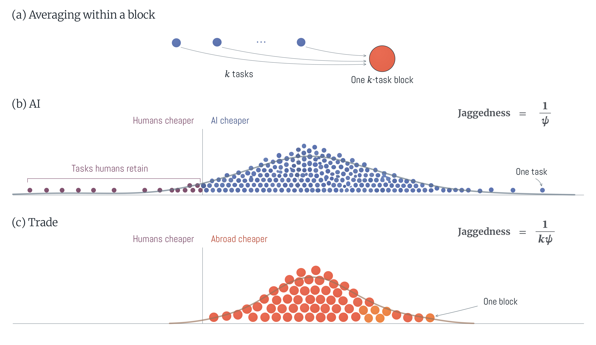
7 Mapping Model to Data
This section estimates \(\psi\), the parameter that reflects the jaggedness of AI frontier and regulates the strength of Ricardian comparative advantage. I use two methods for estimating \(\psi\). The first method recover \(\psi\) from the share \(\pi _{M}\) of tasks that AI can complete below human cost and the median cost gap between AI and humans. The second method identifies \(\psi\) from the curvature of the relative cost distribution. Both methods require data moments that are currently available only for software engineering (SWE) tasks. The reason is that software tasks have largely observable contexts and verifiable outputs, making them amenable to automation and benchmarking.
A natural question is whether the value of \(\psi\) estimated from software engineering tasks is representative of the broader economy. I view these estimates as a plausible upper bound on the economy-wide \(\psi\). The argument is that the same features that make software tasks amenable to AI automation are also likely to make AI productivity relatively uniform across tasks. The performance of AI would be arguably more varied across tasks that combine text-based and embodied elements. Take, for instance, tasks related to legal work, which range from drafting documents to appearing in court. The former is a standard AI task, but the latter is more difficult for AI to perfect. Extrapolating from this example, one could argue that AI’s productivity is likely to be more dispersed across tasks outside software engineering.
This interpretation makes our quantitative results that follow conservative, considering the paper’s central premise. The paper argues that AI-driven growth can raise workers’ real wages despite large-scale displacement. Using the software-based estimate for \(\psi\) would understate the real-wage gains generated by Ricardian selection, because a larger \(\psi\) implies less scope for comparative advantage across tasks.The parameter \(\psi\) also sets the size of the implied improvement in AI capabilities given an observed average cost decline. So, a lower \(\psi\) makes the counterfactual shock smaller. Appendix D.3 runs the model using lower estimates for \(\psi\) and shows larger gains in real wages but smaller gains in real output.
Data. Our estimation uses data from 484 software-engineering drawn from 12 open-source repositories in SWE-bench Verified (Jimenez et al., 2024; OpenAI, 2024). The panel records 32 AI system configurations released from 2024 through 2026 and evaluated by Epoch AI, an independent research organization (Epoch AI, 2026 a). The 32 configurations arrive on 26 distinct release dates, which is also the time dimension used throughout the paper. AI cost is the API charge for the tokens used in a successful attempt, scaled by a factor of 175 that stands for deployment costs beyond tokens (Appendix D.1). Human cost is based on a professional assessment of the time needed to complete the same task, multiplied by one of three hourly wage rates: the BLS mean software developer wage, an effective BLS wage scaled up by a fixed multiplier 1.4 to cover benefits and overhead, and a freelance rate of 100 dollars per hour (Bureau of Labor Statistics, 2023 b,a; Upwork, 2026). All costs are converted to July 2026 dollars using the CPI-U deflator (Bureau of Labor Statistics, 2026). Our baseline analysis constructs relative cost ratios using effective labor wages, adjusted for overhead. Since the experts report a range of hours rather than a single number for human time requirements, we use the midpoint of that range and treat tasks marked as "more than four hours" to never exceed 16 hours. AI cost is calculated based on the cheapest rate available from any model that completed the task by June 2026. Appendix D.1 provides further details on the construction and provenance.
7.1 Estimating the Jaggedness of the AI Frontier (\(1/\psi\))
The model lets us estimate \(\psi\) by comparing worker and AI costs task by task. Recall that the unit cost of producing task \(i\) is \(c_{L}(i)=w/z_{L}(i)\) workersI and \(c_{M}(i)=r/z_{M}(i)\) with AI. Denote the spread between the human and AI cost as
such that \(D(i)>1\) indicates that AI can complete the task more cheaply than human. It is straightforward to show that for any where \(d\in \mathbb{R}_{+}\), the nested-Fréchet productivity distribution implies
The share of assignments for which agentic AI is cheaper than humans is therefore \(\pi _{M}=\Pr [D(i)>1]\). Below I use the above expression to develop two methods for estimating \(\psi\) using data on SWE tasks.
Release-Level Regression. Let \(m\equiv \operatorname {Med}[D(i)\mid D(i)>1]\) denote the median cost spread between humans and AI among tasks that AI performs cheaper. At cost parity, where \(d=1\), equation (39) gives \(\Omega =\pi _{M}/(1-\pi _{M})\). Since \(m\) divides the tasks above cost parity in half, it follows that \(\Pr [D(i)\leq m]=1-\pi _{M}/2\). Plugging these values back into Equation gives
If the productivity distribution follows a nested-Fréchet, Equation (40) holds at every release date with the same \(\psi\). This equation will forms the basis of our first estimation method. Let \(\widehat {\pi }_{M,t}\) denote the sample share of tasks completed by AI below human cost by date \(t\), and let \(\widehat {m}_{t}\) denote the corresponding conditional median.To harmonize the sample across both methods, the tasks with the greatest AI cost advantage must be left out for every released date. However, \(\widehat {m}_{t}\) is nearly unchanged without these tasks. Rearranging equation (40) and taking logs gives the estimating equation across release dates:
\(\varepsilon _{t}\) denotes measurement error associated with hourly human cost assessment across in release date \(t\). For inference, I bootstrap by repository: standard errors are calculated by selecting 12 repositories at random with replacement and recomputing the shares, the medians, and \(\widehat {\psi }\).
Task-level regression. The previous regression uses only two values of \(d\) per release date: cost parity, \(d=1\), and median, \(d=m_{t}\). The next method, leverages the full distribution of the cost spread \(D(i)\) across tasks. Following equation (39), the share of tasks with cost spread above \(d\), relative to the share below \(d\), equals \(\Omega d^{-\psi }\). Let \(S_{t}(d)\equiv \Pr [D(i)>d]\) denote the share of tasks whose cost spread exceeds \(d\) at release date \(t\). Then
The left-hand side represents the log odds ratio that a task has a cost spread above \(d\). Thus \(\psi\) is the constant elasticity at which the log odds ratio falls with \(\ln d\). The intercept \(\ln \Omega _{t}=\ln [\pi _{M,t}/(1-\pi _{M,t})]\) is pinned down by \(\pi _{M,t}\), which is directly observable. Plugging the expression for \(\ln \Omega _{t}\) back into the above equation obtains our estimating equation
Here \(d_{i,t}\) is the cost spread of task \(i\) at date \(t\), and \(\widehat {S}_{i,t}\) is the share of the 484 tasks whose cost spread exceeds \(d_{i,t}\). To harmonize the sample across methods we restrict the sample to tasks where \(d\geq 1\) and drop the task with the largest cost spread, for which \(\widehat {S}_{i,t}=0\). by construction. Lastly, to limit the influence of outliers, I winsorize the sample of cost spreads at the 5% level.
7.2 Estimation Results
Table 1 reports the estimated \(\psi\) under both methods. The release-level regression yields \(\widehat {\psi }=1.14\), and task-level regression delivers \(\widehat {\psi }=1.36\), both with narrow bootstrapped standard error bands.The small bootstrapped standard errors capture only the random draw of repositories and not measurement error in human costs. Each draw changes which repositories are in the sample but keeps the assessed completion times and human cost conventions fixed. Appendix D.3 shows how much the estimate changes across human cost specifications and wage bases. Figure 3 reports the mechanics of each estimation strategy. Panel (a) shows the path of \(\pi _{M}\) over release dates, showing that the share of tasks AI completes below human cost increased to 75.2 percent by the end of the sample.A simple regression of AI cost on release date gives an annual coefficient of -1.57, which implies a 79.2 percent decline per year. Panel (b) plots the distribution of the human-to-AI cost ratio \(G(.)\) among tasks dominated by AI at the latest release. For the median such task, the human costs 4 times more than agentic AI. The release-level regression identifies \(\psi\) from these two data moments across the 26 release dates. Panel (c) plots the log odds ratio against the cost spread across all tasks. The slope of the fitted line corresponds to the \(\psi\) identified by the task-level estimation. Both methods, deliver comparable results which is encouraging.
Robustness. A range of robustness checks is reported in the appendix. Specifically, I re-run the estimations under several alternative configurations. First, I re-run the task-level estimation on the full sample without winsorization, which leaves the estimated \(\psi\) mostly unchanged at 1.35. I also experiment with various proxies for the hourly wage drawn from different sources. Changing the hourly wage shifts the relative human-to-AI cost, potentially affecting the release-level regression that depends on the sample median cost. The estimated \(\psi\) stays between 0.99 and 1.95 under all explored specifications. Appendix Figure B1 reports the full session sensitivity grid. The takeaway is that the estimated \(\psi\) remains in a range of values that all predict qualitatively the same real-wage and displacement trajectory when inserted into the model.
Release level | Task level | |
(1) | (2) | |
| Dispersion parameter \(\psi\) | 1.14 | 1.36 |
| (0.06) | (0.04) | |
| Implied wage growth (percent of output growth) | 47 | 42 |
| Tasks | 484 | 484 |
| Release dates | 26 | 26 |
| Task–date observations | 6,589 | 6,589 |
Notes: Both estimates use the same sample: the 484 tasks observed over 26 release dates on the frontier, whose assigned cost ratios—other than the largest ratio at each date, for which the observed share above is zero—give one observation for each task and date, 6,589 in total. Estimate (1) is the release-level regression estimate of equation (41), which collapses the sample into two values per release date—the share of tasks AI completes below human cost and the median of the cost ratios at that date in the sample—with no intercept. Estimate (2) is the task-level regression estimate of equation (42) on each observation directly; the terms for each release date are not estimated but set to the observed log odds of assignment at that date, and we winsorize the log cost ratios at each release date at the 5% level. Standard errors, below each estimate, are calculated by selecting 12 repositories at random with replacement 400 times, keeping every task from a repository together, and recomputing both estimates each time. Implied wage growth is \(100/(1+\widehat {\psi })\), the model’s real-wage growth rate as a percent of the output growth rate. Both estimates use the BLS wage scaled up by 1.4, an upper limit of 16 hours, the midpoint in logs of each range of hours, and costs in July 2026 dollars.
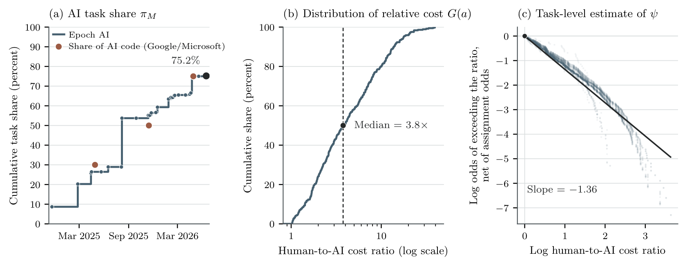
Notes: Panel (a) reports, by release date, the share of the 484 tasks completed at a cost below human cost. The final share is 75.2 percent. Three larger circle points show the shares of software written by AI that two large software producers reported, the three values to which the factor that stands for deployment costs beyond tokens is calibrated. Panel (b) plots the empirical distribution of the human-to-AI cost ratio among tasks assigned to AI. Its horizontal axis is on a log scale; the line and the point show that median human cost is 4 times AI cost. Panel (c) plots the 6,589 points behind equation (42), one for each task and date, before winsorization: for each assigned task, the log odds that the cost ratio of a task exceeds its observed ratio, net of the log odds of assignment at that date, against the log cost ratio. Each of the 26 release dates contributes one line; the point at \(d=1\) is cost parity, through which every line passes by construction, and the fitted line with no intercept, estimated after winsorization as in the text, has slope \(-1.36\), the task-level estimate of \(-\psi\). Each panel uses the BLS wage scaled up by 1.4, an upper limit of 16 hours, and the midpoint in logs of each range of hours. Panel (a) and panel (c) follow the frontier by release date; panel (b) uses its June 2026 endpoint. Panel (a) and panel (b) show no fitted distribution. Our calculation uses the task-level cost and assignment data described in Appendix D.1.
The relative cost distribution \(G(.)\) is continuous. Even though we fit a Fréchet distribution to the data, the headline result of the paper does not require Fréchet. AI-driven displacement coincides with real wage growth so long as the human-to-AI cost distribution \(G(.)\) is continuous, as Theorem 1.b demonstrated. Figure 4 plots the raw distribution \(G(.)\) over tasks from the latest release date. The plot visibly satisfies the continuity requirement posited by Theorem 1.b. Moreover, the Fréchet fit implied by each estimate of \(\psi\) closely mimics the empirical distribution, suggesting that our quantitative framework also provides a reasonable approximation of the data.
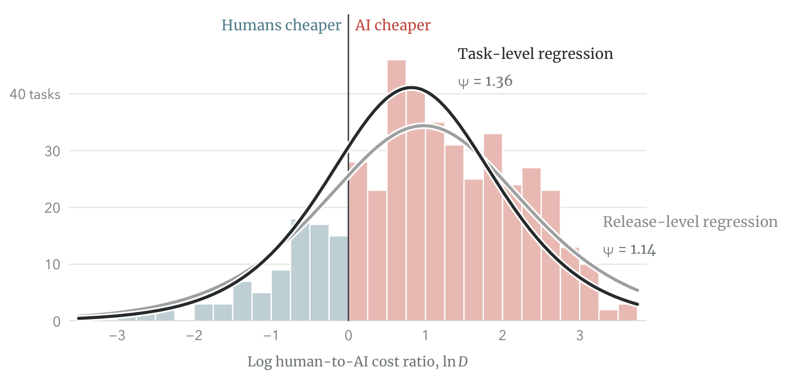
Notes: The figure shows the distribution of the log human-to-AI cost ratio across the 484 tasks at the June 2026 endpoint of the AI frontier. The AI cost frontier is determined by the cheapest successful completion of each task. We treat uncompleted tasks as below cost parity but do not draw them. The line at \(D=1\) shows cost parity; the share of tasks to its right is 75.2 percent. Each fitted line is the density of the log cost ratio implied by the paper’s Fréchet distribution based on estimates of \(\psi\) from Table 1: \(1.36\) (task-level regression) or \(1.14\) (release-level regression). Its calibrated so that its share above parity equals the observed share and scaled to the number of tasks. Costs use the BLS wage scaled up by 1.4, an upper limit of 16 hours, and the midpoint in logs of each range of hours.
7.3 Discussion
The parameter also governs the wage response to task displacement and the gross reassignment hidden behind net displacement. First, the model’s real-wage equation implies
At the two estimates of \(\psi\), the local percentage increase in the real wage is 0.7 to 0.9 times the percentage contraction in labor’s task share. This is an elasticity with respect to labor’s task share, not the response to a unit change in AI’s task share, which also depends on the level of assignment.
For the counterfactuals, we use the task-level distribution estimate \(\psi =1.36\) from Table 1 and impose this value in every sector. Appendix D discusses the limits of applying the software-engineering estimate to other industries, and Appendix Figure B1 reports estimates under different wage bases and assessed-time conventions. Incomplete tasks provide no AI cost observation, as Appendix D.5 explains. These estimates describe observed comparative advantage and do not determine its ultimate range.
7.4 Macroeconomic Calibration
We use the full model with multiple sectors, multiple factors, and input-output linkages to run the simulations. As detailed in Appendix C, counterfactual equilibria can be simulated by calibrating the model to six sufficient statistics from the baseline equilibrium. Two of these statistics are industry-level share variables: (1) Final consumption shares, \(\beta _{s}\), and input-output shares, \(\Gamma _{ks}\), and (2) the share of tasks \(\pi _{Ms}\) performed by AI in that industry. The two other statistics correspond to worker allocation under the status quo. Namely, (3) the share of each education group employed in each industry, \(\mu _{gs}\), and (4) each group’s share of the aggregate wage bill, \(\omega _{g}\). The final requirements two are structural parameters: (5) the productivity dispersion parameter, \(\psi\), and (6) the Roy parameter \(\kappa _{g}\), which regulates worker mobility across sectors.To allow for capital income, the calibrated model lets final output combine the task bundle \(Y_{s}\) with fixed sector-specific capital \(K_{s}\). Namely, \(\tilde {Y}_{s}=Y^{\theta _{s}}_{s}K^{1-\theta _{s}}_{s}\), where \(\theta _{s}>0\) is an observable share. The counterfactual equilibrium can be solved using these observable or estimable statistics by solving the system (C20)– (C29) in changes.
The consumption and input-output shares, \(\beta _{s}\), \(\Gamma _{ks}\), are calibrated to match the 2024 BEA accounts on input-output and value added shares (Bureau of Economic Analysis, 2024). the sample covers \(71\) industries, with details about data construction provided in Appendix C.2. We calibrate the employment shares \(\mu _{gs}\) to the 2024 American Community Survey (US Census Bureau, 2024). The sample includes employed adults aged 25–64 in private and government sectors, with the latter accounting for \(16.9\) percent of the wage bill. We group workers into (1) high school or less, (2) some college or an associate degree, and (3) a bachelor’s degree or more. Their share \(\omega _{g}\), of the aggregate wage bill claimed by each group are respectively, \(18.2\), \(21.4\), and \(60.4\) percent. We adjust the group-by-industry wage bills to match the model’s sector wage bills while matching these group-level shares. We use \(\psi =1.36\) and, following Galle, Rodríguez-Clare and Yi (2023), set \(\kappa _{g}=1.5\) for every group. Appendix C reports further details on the industry concordances and calibration method.To allow for capital income, we calibrate the share of primary non capital inputs as \(\theta _{s}=\min \left \{ \frac {w^{D}_{s}L^{D}_{s}}{\pi _{Ls}\alpha _{s}X_{s}},1\right \}\), where \(w^{D}_{s}L^{D}_{s}\) is worker compensation in the data. In our production function with capital, labor receives \(\theta _{s}\alpha _{s}\pi _{Ls}X_{s}\), agentic AI receives \(\theta _{s}\alpha _{s}\pi _{Ms}X_{s}\), and sector-specific capital receives \((1-\theta _{s})\alpha _{s}X_{s}\), where \(X_{s}\) is gross revenue. The share \(\theta _{s}\) is set to one in 8 sectors, which leaves the aggregate model-predicted wage bill 1.29 percent below the BEA reported worker compensation. We retain this accounting. See Appendix C.3 for more details.
The share \(\pi _{Ms}\) of tasks performed by AI in each industry is calibrated using the July 2026 survey of \(1{,}103\) employed US adults by Epoch AI and Ipsos (Epoch AI, 2026 b). We supplement this data the Anthropic Economic Index (Massenkoff and McCrory, 2026) to extend that measurement beyond the survey. The Epoch AI–Ipsos survey asks US workers how much they rely on AI for 10 types of tasks, such as reading documents and analyzing data. These tasks, however, represent only a fraction of the work people perform. So, we rely on the Anthropic Economic Index to extend coverage to further tasks. Anthropic covers a wider range of tasks scoring them based on Claude and assessed AI capability. The drawback is that these scores do not directly measure the percentage of work delegated to AI. Yet they can be used to impute the AI task share \(\pi _{Ms}\) across work that is not represented in the Epoch AI–Ipsos survey.
We build each \(\pi _{Ms}\) from industry worker occupation mix in industry \(s\) as follows. The Epoch AI–Ipsos survey measures AI use across ten tasks, identifying each respondent’s occupation group. Each occupation performs many tasks not included in the survey. So, we draw on O*NET’s task descriptions to map tasks to occupation (National Center for O*NET Development, 2026). We then impute AI use on the remaining tasks per acceptation. For this, we leverage the fact that in the Anthropic Economic Index, the average score for tasks outside the Epoch AI–Ipsos survey is \(0.66\) times the surveyed tasks. We impose a proportionality assumption, whereby AI performs the non-surveyed tasks in each occupation at \(0.66\) times that occupation’s surveyed rate.
Figure 5 provides an overview of the \(71\) industries. Each circle represents one industry, with the size scaled with the industry’s value added share, and the colors running from orange to teal based on the share of employees with college degrees or higher. Panel A displays the intensity by which production in industry uses cognitive versus physical tasks. Industries located in the bottom right of the plot rely more on cognitive skills, while industries located in top left involve more physical work.The manual and cognitive task indexes are not input shares in production function aggregating over tasks. They are different indexes and do not add up to 100. Panel B compares two measures of AI exposure. It plots the current AI task share \(\pi _{Ms}\) against the forward-looking exposure score \(e_{s}\) on the horizontal axis. The latter is constructed from (Eloundou et al., 2024) based on the assessment of whether large language models could reduce task completion time by one-half without reducing quality.A task receives an exposure score of 1 if a large language model by itself could deliver the time cost reduction. It receives a score of 0.5 if the time cost reduction requires additional software built around the model, and 0 otherwise. They map these task-level ratings into exposure scores for each occupation. We map these occupation scores to industry-level scores using employment shares. The two exposure measures serve different purposes: the survey-based \(\pi _{Ms}\) determines the baseline AI task share in the calibrated model, while \(e_{s}\) is an ex-ante measure that proxies for the adoption rate, which is the share of future AI improvements a sector can absorb.Weighted by value added, the average AI adoption to date is \(14.2\) percent and the average exposure is \(35.2\) percent, with \(\pi _{Ms}<e_{s}\) in every industry. The survey covers \(10.25\) percent of tasks directly, weighted by employment, and drawing occupations at random gives an aggregate share between \(11.8\) and \(17.3\) percent. Appendix C.11 runs the counterfactuals with Microsoft’s lower share of \(6.8\) percent, where the five year real wage gain falls to \(6.7\) percent under balanced adoption and \(7.7\) percent under jagged adoption. Appendix C details the construction of these measures, and Appendix C.11 runs sensitivity analyses using the lower baseline exposure shares based on Microsoft’s record of AI use.
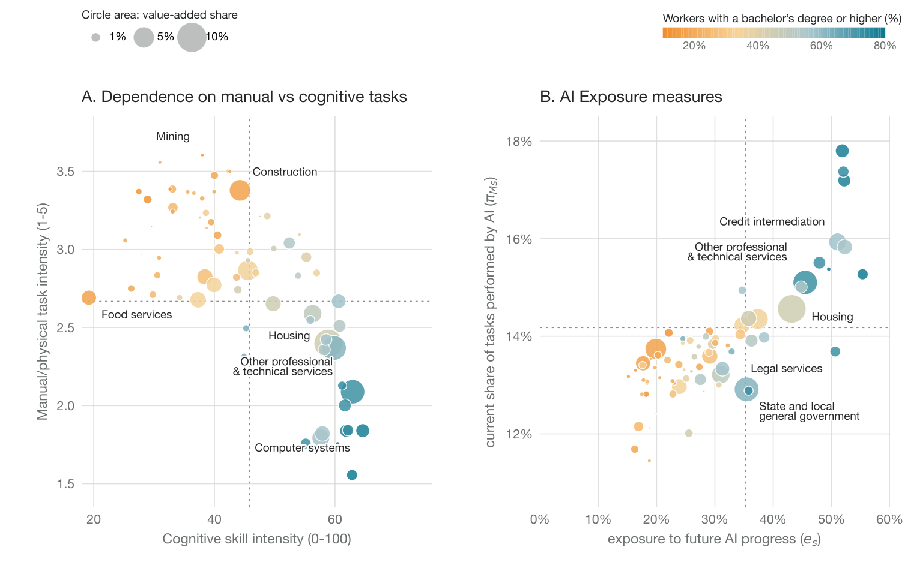
Notes: Each circle represents one sector. Panel A plots the physical intensity index against the cognitive skill intensity index on the horizontal axis. The dashed lines report the employment weighted mean for each axis. Panel B plots the current AI task share against the exposure measure used to discipline adoption of growing AI capabilities. The dashed lines represent the value added weighted mean for each axis. In each panel, circle size shows the sector’s value added share, and the colors report the share of its workers with a bachelor’s degree or more. The calculations are based on the 2024 BEA input–output accounts, the Epoch AI–Ipsos survey, Anthropic Economic Index task data, May 2025 BLS employment, the 2025 BLS employment projection and skill scores, O*NET 31.0, the 2024 American Community Survey, and occupation exposure ratings (Bureau of Economic Analysis, 2024; Epoch AI, 2026 b; Bureau of Labor Statistics, 2025 b,a; National Center for O*NET Development, 2026; US Census Bureau, 2024; Eloundou et al., 2024).
7.5 Historical Validation: The Model Explains 2022-25 Labor Market Effects
Before deploying the estimated model for forward-looking counterfactual simulations, it is useful to test its explanatory power with respect to observed AI displacement effects. To this end, we perform a retrospective test of the model using IV-based goodness-of-fit measure developed by Adão, Costinot and Donaldson (2025). We ask whether the calibrated model reproduces the labor market effects that materialized between 2022 and 2025, but were not targeted in the calibration. As detailed in Appendix C.12, we use changes to sectoral wages from May 2022 to May 2025 as our validation test target.
The test has a simple logic. Between 2022 and 2025, the economy was hit by many shocks, each of which may have affected wages. One such shock was the rapid improvement in agentic AI capabilities from near-zero levels to those observed in 2025. This rapid growth shock hit different sectors with various levels of intensity, represented by instrument \(z_{s}\). The idea behind the test is to use the calibrated model to simulate the wage changes \(\{\Delta w_{s}\}\) implied by AI growth. We then define the residual wage change as the difference between observed wage growth from 2022 to 2025 and the model-predicted wage change due to AI, \(\Delta w^{D}_{s}-\Delta w_{s}\). If the model correctly predicts the wage effects of AI growth, this residual should be orthogonal to the AI growth shock. Formally, the goodness of fit statistic \(\widehat {\beta }_{z}=S^{-1}\sum _{s}z_{s}(\Delta w^{D}_{s}-\Delta w_{s})\) must have an expected value of zero. If so, the residual reflects other contemporaneous shocks hitting the economy, rather than omitted wage effects of AI growth the model failed to capture. The corresponding IV coefficient is
From the lens of the model, the change in the AI task share \(\Delta \pi _{Ms}\) in each sector \(s\) is the sufficient statistics for constructing the instrument \(z_{s}\) and simulating \(\Delta x_{s}\). The change in task share is constructed based on each sector’s May 2022 occupation mix with the measure of occupational exposure to agentic AI from Eloundou et al. (2024). Appendix C.12 provides the details about the data construction and inference.
Because we are analyzing a three years window, labor mobility is presumably less than implied by \(\kappa =1.5\), which estimated based on labor market response over a longer horizon. We therefore assess two cases: \(\kappa \downarrow 1\), in which workers are frozen in their original sectors, and \(\kappa =1.5\), following the preferred estimation value of Galle, Rodríguez-Clare and Yi (2023). Figure 6 reports the observed wage effects, plus the mode’s predicted effects and the IV slope test. The goodness-of-fit statistic is \(\widehat {\beta }_{z}=1.7\times 10^{-4}\) under \(\kappa \downarrow 1\) and \(\widehat {\beta }_{z}=-8.6\times 10^{-5}\) with \(\kappa =1.5\). The null of a zero discrepancy is not rejected at the 5 percent confidence level, in both cases. The corresponding IV coefficient is \(\widehat {\beta }^{IV}=0.8\) when workers remain in their original sectors, with a 95 percent confidence set of \([0.43,1.21]\). With \(\kappa =1.5\), the IV coefficient is \(\widehat {\beta }^{IV}=1.15\), with a 95 percent confidence set of \([0.62,1.74]\). Both confidence sets contain one.
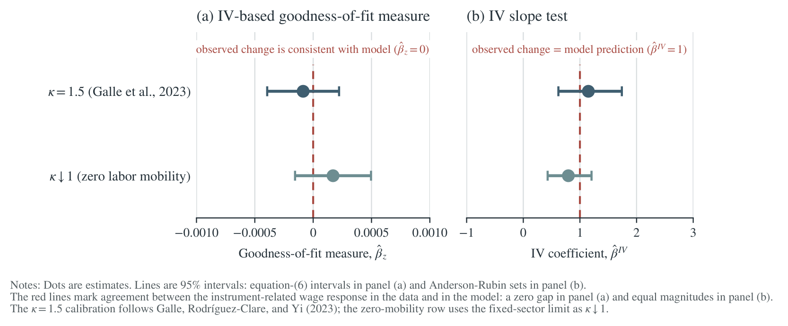
Notes: Panel (a) plots Census business AI use. The model task share is scaled from \(14.2\) percent in July 2026 to \(5.7\) percent in May 2025. The scaling ratio, \(0.087/0.217\), is approximate because the survey wording changed. The model compares the May 2025 equilibrium with near-zero AI use, which is assumed for May 2022. Panel (b) shows \(61\) sectors. Nominal wage changes use fixed May 2022 occupation weights. Wage changes and exposure are demeaned across these sectors. The lines project observed and model-predicted wage changes on the same exposure instrument; the comparison concerns relative wage effects. In panel (c), the dashed line marks equal slopes, and the intervals are 95 percent Anderson–Rubin confidence sets. The comparison does not test the average wage change, employment, or welfare, and the confidence sets are wide enough to allow sizable errors in the predicted changes. Appendix C.12 describes the construction and the checks on the inference.
8 Forward-Looking Impacts of AI-Driven Growth
This section uses the calibrated model to simulate the prospective impacts of AI-driven growth, assuming AI progress continues along its current trajectory. Our goal is to isolate the pure impact of AI-driven growth on the labor market through Ricardian comparative advantage. We therefore shut down all other engines of growth, including population growth and capital investment. This naturally comes with clear caveats: fertility rates and investment decisions are presumably influenced by AI-driven growth, which is not modeled here. Ricardian reassignment is also not the only force affecting labor market outcomes, though the retrospective test of the model’s predictive power points to its ability to isolate AI-driven growth effects, at least over a shorter time horizon. We begin by describing how we model the prospective AI growth trajectory, then present four results tightly connected to our theoretical framework.
8.1 Extrapolating the AI Growth Trajectory
We extrapolate the trajectory of future AI growth from the observed decline in the cost of completing software engineering tasks. The data used to estimate the rate of cost decline is the same as Section 7. To give context, the data record the cost of AI systems performing software tasks. The cost per successful task is calculated based on fixed token prices from July 31, 2026. The reduction in cost therefore represent pure improvement in token efficiency. This is of course a conservative measurement stance, since technological progress can present itself in terms of lower token costs. However, we focus our measurement on fixed token prices to disentangle pure technological progress from competition and captive pricing strategies.
Figure 7 plots the resulting cost index over the running sample period. Task costs at fixed token prices fell at an annual rate of \(79.1\) percent 19 months of model releases. We assume that AI task costs continue to fall, but that the annual rate of decline slows from \(79.1\) percent initially to about \(45.8\) percent after five years. This calculation follows from improvements in computer hardware halving the cost of completing tasks every 1.7 years. Meanwhile the cost reducing effects of improvements in model training, model design, and harness halve every two years.Specifically, we model the rate of decline in the task cost \(g(t)\equiv -d\ln c(t)/dt\) as \(g(t)=g_{H}+(g_{0}-g_{H})2^{-t/2},\) where \(g_{0}\approx 1.57\) is the estimated current growth rate and \(g_{H}=\ln (2)/1.7\) is the rate implied by hardware improvements. Under these assumptions, task costs fall by \(99.2\) percent after five years.With the rate of decline held at its current level, the cost of performing tasks with agentic AI tools would fall by \(99.96\) percent. Appendix C.4 unpacks more details about the our extrapolation of the growth trajectory.
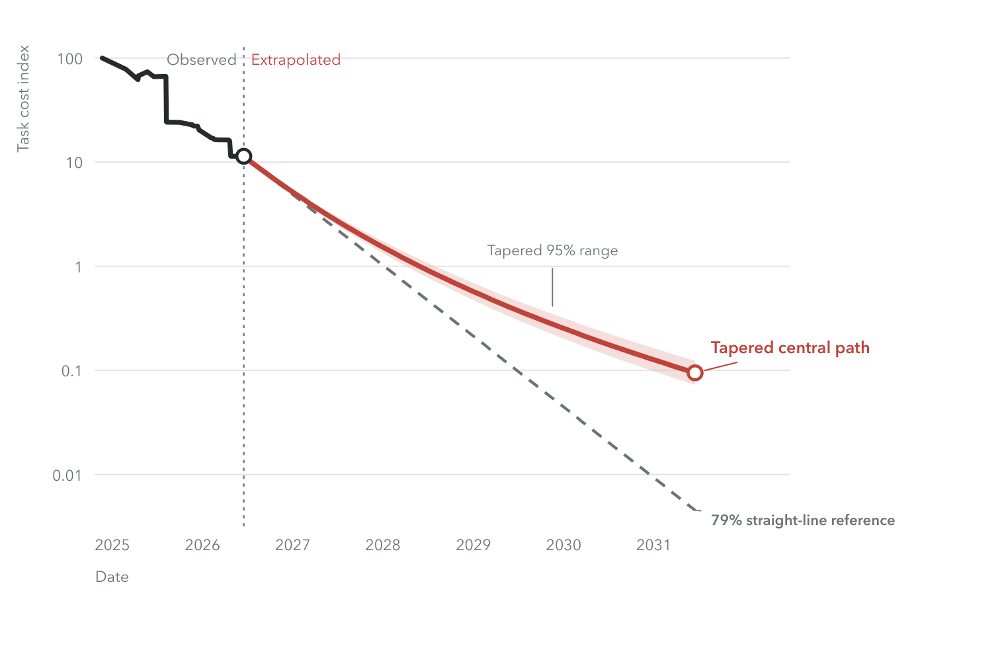
Notes: The observed cost index is calculated by release date from the frontier of the cheapest successful completion of each task, with task fixed effects, and equals 100 at the first release date. Every model uses the same fixed token prices. The solid projection assumes that the annual rate of decline slows toward the rate of improvements in computer hardware; the range above and below it uses the same assumption for the 95 percent confidence set. The line below the solid projection holds the estimated 79 percent annual decline constant. The cost index is on a log scale. Section 7 describes the task panel and the estimation. Our calculation uses SWE-bench Verified model task costs (Jimenez et al., 2024; OpenAI, 2024).
Next, we infer the growth in the stock of frontier AI knowledge from the reduction in average task cost performed by AI. For this, we invoke the observation that under the model’s Fréchet distribution, the average task cost for AI is
Hence, our measure of average task cost reduction at token prices fixed in units of the final good (\(\hat {r}=1\)) determines the growth in stock of AI knowledge as \(\hat {T}_{M}=\widehat {c}^{-\psi }_{M}\). We assume that sector \(s\) experiences \(e_{s}\) times the decline in log AI costs, where \(e_{s}\) is an exposure measure obtained from interacting the occupation exposure ratings from (Eloundou et al., 2024) with BLS sectoral occupation employment weight. Thus, the sector’s average AI cost and technology therefore change by
We also experiment with a balanced adoption scenario, which replaces \(e_{s}\) with the weighted mean exposure \(\bar {e}=\sum _{k}\alpha _{k}\lambda _{k}e_{k}\), where \(\alpha _{k}\lambda _{k}\) are value added shares.
8.2 Real Wage Growth Despite AI-Driven Displacement
Figure 8 shows how average real wages and labor’s share of GDP change under our projected AI-driven growth scenario. The picture shows a clear divergence, amplifying the view expressed at the outset of this paper—that displacement does not lead to immiserization. Our simulation predicts that after five years, average real wages rise by \(18.5\) percent, while labor’s share of value added falls from \(54.1\) to \(39.9\) percent. On an accounting level the explanation is straightforward. After five years, real output rises by \(60.7\) percent, while workers’ share of value added falls from \(54.1\) to \(39.9\) percent. With the number of workers held fixed, these changes still imply an \(18.5\) percent increase in average real wages. To illustrate the key role jaggedness in AI capabilities, the lighter lines in Figure 8 repeat the simulation with an AI frontier five times less jagged (\(\psi \rightarrow 5\psi\)). Real output rises by \(102.8\) percent after five years, more than the baseline with greater jaggedness, yet average real wages barely change, and labor’s share of value added falls more aggressively to \(26.9\) percent, about \(50\) percent of its value today.
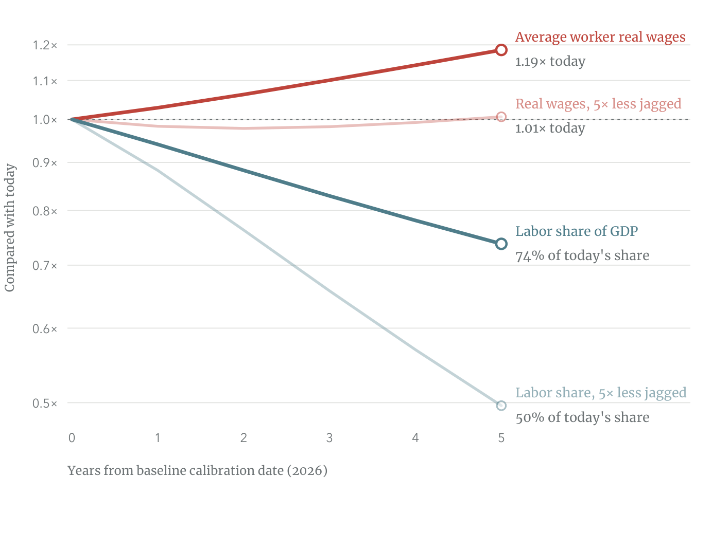
Notes: Each line is relative to its value today and equals one at year zero, on a log scale. The darker lines use the estimated jaggedness of the AI frontier, \(\psi =1.36\); the lighter lines repeat the simulation with a frontier five times less jagged, \(\psi =6.79\), and everything else unchanged. Aggregate real wages are the mean of the three education groups’ real wages, weighted by baseline wage bills. The teal line is workers’ share of total value added. The figure reports it as a percentage of the share today. The numeraire is the model’s final expenditure bundle for the full set of industries. The simulation uses the central cost path in Figure 7, holds the stock of AI capacity fixed, and sets the change in each sector’s AI technology as in equation (44). Our calculation uses the Epoch AI–Ipsos survey, O*NET, the BEA industry accounts, BLS employment, the 2024 American Community Survey, and occupation exposure ratings (Epoch AI, 2026 b; National Center for O*NET Development, 2026; Bureau of Economic Analysis, 2024; Bureau of Labor Statistics, 2025 b; US Census Bureau, 2024; Eloundou et al., 2024).
The more interesting explanation is derived from the Ricardian assignment model. As labor gets displaced from 30% of the tasks two development follow. First, AI-performed tasks become more productive and their output becomes cheaper as a result. Labor sorts into more productive tasks, and the marginal product of labor grows. The labor becomes more productive on the margin, and the wage buys a larger basket of goods. Altogether, the real earning power of the workers grows, even though they perform fewer tasks.
8.3 Jagged versus Balanced AI Adoption
Our baseline simulation allows adoption to be jagged, in the sense that different sectors have different adoption rates. We proxy for adoption rates, based on exposure measures inferred from the mix of occupations a sector employs. It’s motivated by evidence that the tasks performed by some occupations are more amenable to AI automation than others. A question worth exploring, here, is how jagged adoption is contributing the real wage growth. Theorem 4 argued that jagged adoption is generally better for aggregate real wages. The intuition is that jagged adoption enables sizable efficiency gains in exposed sectors, which translate to lower prices for their goods, while also presenting labor with shelter in lagging sectors and occupations.
Figure 9 compares the growth in aggregate real wage under balanced and jagged AI adoption over the 5-year horizon. Both cases use the same average cost decline projection, \(\hat {c}_{M}\). However, the balanced adoption applied this cost reduction uniformly to all industries or occupations: \(\hat {T}_{Ms}=\hat {c}^{-\psi \bar {e}}_{M}\) where \(\bar {e}=\sum _{k}\alpha _{k}\lambda _{k}e_{k}\) is the weighted average exposure. The results are similar over the first five years: under balanced adoption, average real wages rise by \(16.8\) percent and labor’s share of value added falls to \(39.6\) percent. Real output rises by \(59.5\) percent under balanced adoption and \(60.7\) percent under jagged adoption, so jagged adoption pays workers more at about the same output growth. After five years, the difference in annual wage growth increases every year. By year \(50\), real wages grow by \(5.7\) percent a year under balanced adoption and \(8.9\) percent under jagged adoption. Workers move toward sectors where AI improves more slowly. The prices of goods produced in these sectors rise relative to prices in sectors where AI improves faster, increasing the purchasing power of workers’ earnings, as in Theorem 2.
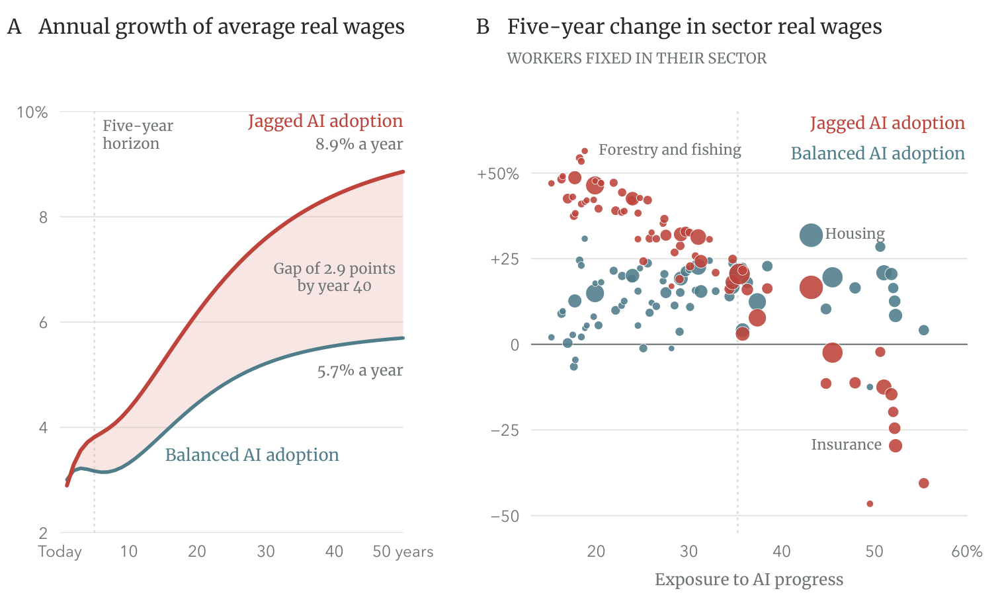
Notes: In panel A, each line is the annual growth rate of average real wages, the percentage change from the previous year. Aggregate real wages are the mean of the three education groups’ real wages, weighted by baseline wage bills, in units of the model’s final expenditure bundle for the full set of industries. The panel shows the gap between the two profiles, and the rule shows the five-year horizon of the main results. Panel B, plots a sector’s change in real wages after five year against the sector’s exposure to AI progress when workers remain in their original sectors. The area of each dot is proportional to the sector’s value added, and the dotted line marks the weighted average exposure across sectors. Both the jagged and balanced scenarios use the cost reduction path in Figure 7 for \(50\) years, and set the change in each sector’s AI technology as in equation (44). Our calculation uses the Epoch AI–Ipsos survey, O*NET, the BEA industry accounts, BLS employment, the 2024 American Community Survey, and occupation exposure ratings (Epoch AI, 2026 b; National Center for O*NET Development, 2026; Bureau of Economic Analysis, 2024; Bureau of Labor Statistics, 2025 b; US Census Bureau, 2024; Eloundou et al., 2024).
8.4 All Skill Groups Gain Irrespective of Mobility
A notable result from our Ricardian theory is that all workers can gain from AI-driven growth, irrespective of which sector they work in, even if they cannot switch sectors. The prerequisite for this to happen is that AI adoption not be too jagged and the agentic AI and labor profiles be sufficiently different across tasks. Here we test this using the full-fledged quantitative model with three groups of workers based on educational levels: (1) high school or less, (2) some college, and (3) Bachelor’s degree or higher. We simulate the average real wage for each group under our 5-year AI-driven growth scenario.
Panel A in Figure 10 shows that average real earnings rise among each education group even when workers cannot move sectors. Panel A compares the five-year real wage gains in two scenarios: in the first scenario workers remain in their original sectors, which corresponds to \(\kappa \downarrow 1\). In the second scenario, workers move across sectors, governed by the Roy parameter \(\kappa =1.5\). Without sectoral mobility, real earnings rise by \(31.2\) percent among workers with high school degrees or less, \(24.1\) percent for those with some college or an associate degree, and \(12.5\) percent for those with a bachelor’s degree or higher. When workers can move between sectors, the corresponding real wage gains are \(28.1\) percent, \(22.9\) percent, and \(14.1\) percent, respectively.Appendix Figure C5 reports the group-level gains when AI adoption is set to be balanced across sectors.
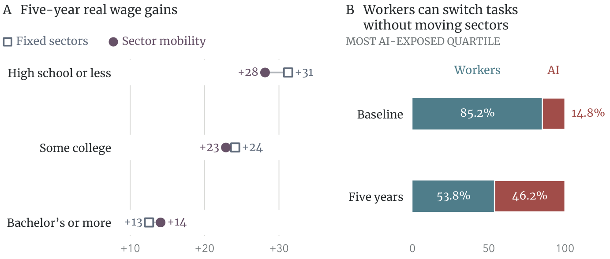
The reason workers gain despite not being able to switch sectors reflects how AI displacement works. Unlike trade-driven displacement, AI-driven displacement generally does not consume the entire task spectrum within a sector. Instead, it leaves some niche tasks to workers. So, rather than having to switch sectors to find work, workers simply sort into those niche tasks within the same sector. Panel B in Figure 10 illustrates this point. Among the \(18\) sectors with the highest AI exposure, workers’ share of tasks falls from \(85.2\) to \(53.8\) percent over the five year window, with AI’s share rising from \(14.8\) to \(46.2\) percent. These results reveal that, unlike say past trade shocks, AI-driven growth would mostly affect labor market outcomes through within-sector rather than across-sector reassignment. Even the most AI-exposed sectors continue to offer a considerable range of tasks in which humans retains a comparative advantage.
8.5 The Illusive Jevons Paradox
Next, we use the model to uncover the conditions under which the Jevons paradox would emerge. Our baseline calibration assigns a unit elasticity of substitution across sectors. As noted in Section 5.1, this expectedly leads knowledge workers, who hold BA degrees or higher, to experience relatively smaller gains from AI-driven growth. The reason is that the elasticity of substitution between knowledge workers and AI is larger than the elasticity of substitution across sectors. Consequently, the efficiency gains in knowledge-intensive sectors do not generate a strong enough demand boost for those sectors to offset the wage losses from AI substitution. However, if the inter-sectoral elasticity of substitution is large enough, the demand boost could be enough to more than offset the negative wage effects of AI displacement.
Figure 11 illustrates this point. It reports the real wage gains over the five-year window for each education group under different inter-sectoral substation elasticities, \(\eta\). Under the baseline calibration, \(\eta =1\), the gains have the expected ordering, workers with high school education or less gains the most, and those with a bachelor’s degree or higher gains the least for AI-driven growth. The gap closes as \(\eta\) rises and all groups experience the exact same real wage gains under \(\eta \approx 2.5\), standing at \(28.9\) percent.The elasticity at which the gap closes is a little above the threshold \(1+\psi \approx 2.36\) noted in Section 5.1 because the calibrated model is more general; it accounts for input-output linkages and sector-specific capital. Above this threshold we begin witnessing the Jevons paradox. Real wages go up the most for workers with Bachelor’s degrees or higher who are the most exposed to AI-driven displacement. However, as one may no
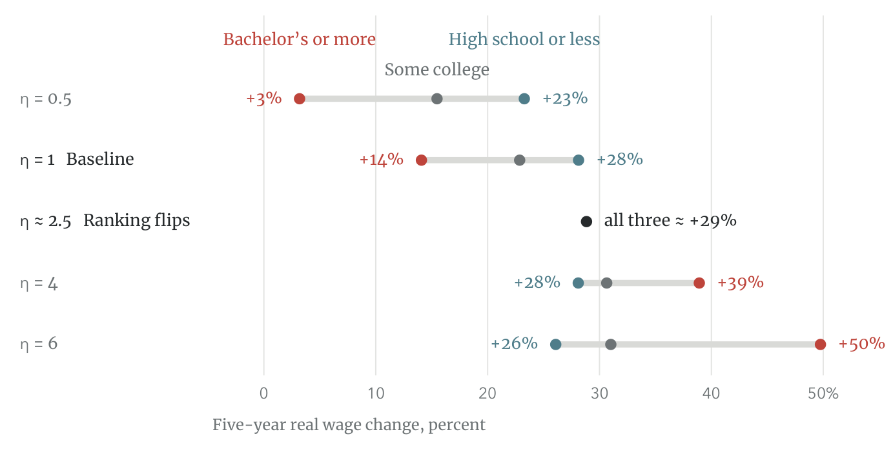
9 Conclusion
This paper offers a pro-labor view of explosive AI-driven growth. The view draws on Ricardo’s theory of comparative advantage. An interesting implication of the theory is that AI displacement coincides with real wage gains at the aggregate level as long as humans and agentic AI have different productivity profiles across tasks. More important, if the difference is sufficiently large and AI adoption is not too jagged and concentrated in select industries, then every worker can gain from AI-driven growth, even if they cannot switch sectors. One reason is a unique feature of AI-driven displacement that distinguishes it from trade-driven displacement and past episodes of automation: it leaves some niche tasks to workers within each sector. Engines displaced horses because they were uniformly more productive than horses at all tasks, which left horses no niche tasks to retreat to. Agentic AI may perform every task better than humans, but the relative difference between humans and agentic AI across tasks is not uniform.
Many commentators have made this argument informally. We formalize it in a dynamic Ricardian assignment model in which no task is reserved for humans. As AI becomes more productive, it takes over the tasks on which it has the greatest cost advantage, and workers retreat into a narrower set of niche tasks. The real wage then rises in inverse proportion to labor’s share of economic tasks, with an elasticity that measures the jaggedness of AI capabilities. Because labor’s share of GDP equals its share of tasks, the aggregate real wage effects of AI are determined by two sufficient statistics, the jaggedness of AI capabilities and the change in labor’s share of GDP, which we can measure without estimating an aggregate production function. It follows that the niche tasks left to workers are not expensive bottlenecks; wages grow instead because workers become more productive on the tasks they retain and the wage buys a larger basket of goods. The distribution of comparative advantage governs the pace of wage gains and their eventual limit, but not the direction. More displacement also amplifies the marginal wage gains from AI growth, and when fixed shares of output are allotted to AI installation and research, the real wage rises without bound on the path to a singularity in finite time.
Across sectors, balanced AI adoption is the worst case scenario for aggregate real wages, because workers have no lagging sector to retreat to. When adoption is jagged, labor concentrates in lagging sectors and commands a wage proportional to their price, which rises relative to the economy-wide price index through rapid AI-driven growth elsewhere. If adoption eludes some sectors, real wages grow at the same rate as output. Input-output linkages raise the share of output growth appearing as wage growth under balanced adoption. Even when workers cannot switch sectors, real wages benefit from AI growth across the board unless AI adoption is extremely jagged across industries. Trade-driven displacement immiserated workers in import-competing sectors because trade is concentrated in select industries and operates under a high trade elasticity.
We estimate \(\psi\), the parameter that reflects the jaggedness of AI capabilities, from the cost of humans versus AI on similar software engineering tasks. By the end of the sample, AI completes \(75.2\) percent of the tasks below human cost. Our two estimation methods yield \(\psi =1.14\) and \(\psi =1.36\), so each percent decline in labor’s share of GDP raises the real wage by \(0.7\) to \(0.9\) percent. We view these estimates as a plausible upper bound on the economy-wide \(\psi\), because AI’s productivity is likely to be more dispersed across tasks outside software engineering, so our quantitative results are conservative. The calibrated model is not rejected by a test against the recent effects of AI growth on sectoral wages, which were not targeted in the calibration, whether workers remain in their original sectors or move across sectors.
If AI continues to grow along the same trajectory, average real wages rise by \(18.5\) percent after five years, while labor’s share of GDP falls from \(54.1\) to \(39.9\) percent. With an AI frontier five times less jagged, real output rises by more, but average real wages rise by only \(0.64\) percent. At about the same output growth, jagged adoption pays workers more than balanced adoption. Every education group gains, even when workers cannot move across sectors, with five-year gains that range from \(12.5\) percent for workers with a bachelor’s degree or more to \(31.2\) percent for those with high school or less. The Jevons paradox, in which the knowledge workers that AI displaces gain the most, emerges only if the elasticity of substitution across sectors exceeds about \(2.5\).
Our analysis has several caveats. To isolate the pure impact of AI-driven growth through Ricardian comparative advantage, we shut down all other engines of growth, including population growth and capital investment, even though fertility rates and investment decisions are presumably influenced by AI-driven growth. Ricardian reassignment is also not the only force affecting labor market outcomes. Our estimates of jaggedness, drawn from software engineering tasks, describe observed comparative advantage and do not determine its ultimate range. Deriving the shares of output allotted to AI installation and research from equilibrium investment decisions, and estimating the jaggedness of AI capabilities outside software engineering, are left for future work.
References
Acemoglu, Daron. 2025. “The Simple Macroeconomics of AI.” Economic Policy, 40(121): 13–58.
Acemoglu, Daron, and David H. Autor. 2011. “Skills, Tasks and Technologies: Implications for Employment and Earnings.” In Handbook of Labor Economics, Vol. 4B, edited by David Card and Orley Ashenfelter, 1043–1171. Amsterdam: Elsevier.
Acemoglu, Daron, and Pascual Restrepo. 2018. “The Race between Man and Machine: Implications of Technology for Growth, Factor Shares, and Employment.” American Economic Review, 108(6): 1488–1542.
Acemoglu, Daron, and Pascual Restrepo. 2022. “Tasks, Automation, and the Rise in U.S. Wage Inequality.” Econometrica, 90(5): 1973–2016.
Adão, Rodrigo, Arnaud Costinot, and Dave Donaldson. 2025. “Putting Quantitative Models to the Test: An Application to the U.S.-China Trade War.” Quarterly Journal of Economics, 140(2): 1471–1524.
Aghion, Philippe, Benjamin F. Jones, and Charles I. Jones. 2019. “Artificial Intelligence and Economic Growth.” In The Economics of Artificial Intelligence: An Agenda, edited by Ajay Agrawal, Joshua Gans, and Avi Goldfarb, 237–282. Chicago: University of Chicago Press.
Althoff, Lukas, and Hugo Reichardt. 2026. “Task-Specific Technical Change and Comparative Advantage.” CESifo Working Paper 12403.
Arkolakis, Costas, Arnaud Costinot, and Andrés Rodríguez-Clare. 2012. “New Trade Models, Same Old Gains?” American Economic Review, 102(1): 94–130.
Artuç, Erhan, Paulo Bastos, and Bob Rijkers. 2023. “Robots, Tasks, and Trade.” Journal of International Economics, 145: 103828.
Autor, David, and Neil Thompson. 2025. “Expertise.” National Bureau of Economic Research Working Paper 33941.
Autor, David H., David Dorn, and Gordon H. Hanson. 2013. “The China Syndrome: Local Labor Market Effects of Import Competition in the United States.” American Economic Review, 103(6): 2121–2168.
Baumol, William J. 1967. “Macroeconomics of Unbalanced Growth: The Anatomy of Urban Crisis.” American Economic Review, 57(3): 415–426.
Bureau of Economic Analysis. 2024. Input-Output Accounts Data. Washington, DC: US Department of Commerce. https://www.bea.gov/industry/input-output-accounts-data (accessed July 7, 2026).
Bureau of Labor Statistics. 2023 a. “Employer Costs for Employee Compensation—March 2023.” US Department of Labor News Release USDL-23-1305.
Bureau of Labor Statistics. 2023 b. Occupational Employment and Wage Statistics, May 2023. Washington, DC: US Department of Labor. https://www.bls.gov/oes/2023/may/oes151252.htm (accessed August 13, 2026).
Bureau of Labor Statistics. 2025 a. Employment Projections, 2025–35: Industry-Occupation Matrix and Skills Data. Washington, DC: US Department of Labor. https://www.bls.gov/emp/ (accessed September 6, 2026).
Bureau of Labor Statistics. 2025 b. Occupational Employment and Wage Statistics, May 2025. Washington, DC: US Department of Labor. https://www.bls.gov/oes/tables.htm (accessed August 15, 2026).
Bureau of Labor Statistics. 2026. Consumer Price Index for All Urban Consumers (CPI-U). Washington, DC: US Department of Labor. https://data.bls.gov/timeseries/CUUR0000SA0 (accessed August 13, 2026).
Caliendo, Lorenzo, and Fernando Parro. 2015. “Estimates of the Trade and Welfare Effects of NAFTA.” Review of Economic Studies, 82(1): 1–44.
Caliendo, Lorenzo, Maximiliano Dvorkin, and Fernando Parro. 2019. “Trade and Labor Market Dynamics: General Equilibrium Analysis of the China Trade Shock.” Econometrica, 87(3): 741–835.
Costinot, Arnaud, and Jonathan Vogel. 2015. “Beyond Ricardo: Assignment Models in International Trade.” Annual Review of Economics, 7: 31–62.
Dell’Acqua, Fabrizio, Edward McFowland III, Ethan Mollick, Hila Lifshitz, Katherine C. Kellogg, Saran Rajendran, Lisa Krayer, François Candelon, and Karim R. Lakhani. 2026. “Navigating the Jagged Technological Frontier: Field Experimental Evidence of the Effects of Artificial Intelligence on Knowledge Worker Productivity and Quality.” Organization Science, 37(2): 403–423.
Dix-Carneiro, Rafael, and Brian K. Kovak. 2017. “Trade Liberalization and Regional Dynamics.” American Economic Review, 107(10): 2908–2946.
Eaton, Jonathan, and Samuel Kortum. 2001. “Technology, Trade, and Growth: A Unified Framework.” European Economic Review, 45(4–6): 742–755.
Eaton, Jonathan, and Samuel Kortum. 2002. “Technology, Geography, and Trade.” Econometrica, 70(5): 1741–1779.
Eloundou, Tyna, Sam Manning, Pamela Mishkin, and Daniel Rock. 2024. “GPTs Are GPTs: Labor Market Impact Potential of LLMs.” Science, 384(6702): 1306–1308.
Epoch AI. 2026 a. AI Benchmarking Hub. Epoch AI. https://epoch.ai/benchmarks (accessed August 13, 2026).
Epoch AI. 2026 b. Polling on AI Usage (July 2026). Epoch AI. https://epoch.ai/data/polling (accessed August 15, 2026).
Freund, Lukas B., and Lukas F. Mann. 2026. “Job Transformation, Specialization, and the Labor Market Effects of AI.” Federal Reserve Bank of Minneapolis Opportunity & Inclusive Growth Institute Working Paper 114.
Galle, Simon, Andrés Rodríguez-Clare, and Moises Yi. 2023. “Slicing the Pie: Quantifying the Aggregate and Distributional Effects of Trade.” Review of Economic Studies, 90(1): 331–375.
Hampole, Menaka, Dimitris Papanikolaou, Lawrence D. W. Schmidt, and Bryan Seegmiller. 2025. “Artificial Intelligence and the Labor Market.” National Bureau of Economic Research Working Paper 33509.
Hémous, David, and Morten Olsen. 2022. “The Rise of the Machines: Automation, Horizontal Innovation, and Income Inequality.” American Economic Journal: Macroeconomics, 14(1): 179–223.
Hicks, John R. 1932. The Theory of Wages. London: Macmillan.
Jevons, William Stanley. 1865. The Coal Question. London: Macmillan.
Jimenez, Carlos E., John Yang, Alexander Wettig, Shunyu Yao, Kexin Pei, Ofir Press, and Karthik Narasimhan. 2024. “SWE-bench: Can Language Models Resolve Real-World GitHub Issues?” International Conference on Learning Representations.
Jones, Charles I., and Christopher Tonetti. 2026. “Past Automation and Future A.I.: How Weak Links Tame the Growth Explosion.” Working paper, version 0.5, May 2026. Stanford University.
Kogan, Leonid, Dimitris Papanikolaou, Lawrence D. W. Schmidt, and Bryan Seegmiller. 2023. “Technology and Labor Displacement: Evidence from Linking Patents with Worker-Level Data.” National Bureau of Economic Research Working Paper 31846.
Korinek, Anton, and Donghyun Suh. 2024. “Scenarios for the Transition to AGI.” National Bureau of Economic Research Working Paper 32255.
Kortum, Samuel S. 1997. “Research, Patenting, and Technological Change.” Econometrica, 65(6): 1389–1419.
Lashkari, Danial, Wensu Li, Christina Qiu, and Neil Thompson. 2026. “AI, Scale, and Task-Based Theories of Automation.” Working paper, July 2026. Federal Reserve Bank of New York and MIT FutureTech.
Lindenlaub, Ilse, Ryungha Oh, María Alejandra Rodríguez, and Laura Veldkamp. 2026. “Beyond Exposure: Predicting AI Adoption Based on Comparative Advantage.” National Bureau of Economic Research Working Paper 35271.
Lind, Nelson, and Natalia Ramondo. 2023. “Global Innovation and Knowledge Diffusion.” American Economic Review: Insights, 5(4): 494–510.
Massenkoff, Maxim, and Peter McCrory. 2026. “Labor Market Impacts of AI: A New Measure and Early Evidence.” Anthropic, March 5, 2026. https://www.anthropic.com/research/labor-market-impacts. Accompanying data: Anthropic Economic Index, task scores, version 2ea58ff, https://huggingface.co/datasets/Anthropic/EconomicIndex/resolve/2ea58ff75e4247d26810c37f10c179edc2466cac/labor_market_impacts/task_penetration.csv.
Moll, Benjamin, Lukasz Rachel, and Pascual Restrepo. 2022. “Uneven Growth: Automation’s Impact on Income and Wealth Inequality.” Econometrica, 90(6): 2645–2683.
Mookherjee, Dilip, and Debraj Ray. 2022. “Growth, Automation and the Long-Run Share of Labor.” Review of Economic Dynamics, 46: 1–26.
National Center for O*NET Development. 2026. O*NET 31.0 Database. Washington, DC: US Department of Labor, Employment and Training Administration. https://www.onetcenter.org/database.html (accessed September 6, 2026).
Nordhaus, William D. 2021. “Are We Approaching an Economic Singularity? Information Technology and the Future of Economic Growth.” American Economic Journal: Macroeconomics, 13(1): 299–332.
OpenAI. 2024. “Introducing SWE-bench Verified.” August 13, 2024. https://openai.com/index/introducing-swe-bench-verified/.
Rinehart, Will. 2026. “Jagged Intelligence, Jagged Adoption.” American Enterprise Institute, January 23, 2026. https://www.aei.org/technology-and-innovation/jagged-intelligence-jagged-adoption/.
Rodríguez-Clare, Andrés, Mauricio Ulate, and José P. Vasquez. 2025. “Trade with Nominal Rigidities: Understanding the Unemployment and Welfare Effects of the China Shock.” Working paper, March 2025.
Traiberman, Sharon. 2019. “Occupations and Import Competition: Evidence from Denmark.” American Economic Review, 109(12): 4260–4301.
Trammell, Philip, and Anton Korinek. 2023. “Economic Growth under Transformative AI.” National Bureau of Economic Research Working Paper 31815.
Upwork. 2026. “Software Developer Hourly Rates.” https://www.upwork.com/hire/software-developers/cost/ (accessed August 13, 2026).
US Census Bureau. 2024. American Community Survey (ACS): Public Use Microdata Sample (PUMS), 2024. Washington, DC: US Department of Commerce. https://www.census.gov/programs-surveys/acs/microdata/access/2024.html (accessed August 14, 2026).
Zeira, Joseph. 1998. “Workers, Machines, and Economic Growth.” Quarterly Journal of Economics, 113(4): 1091–1117.